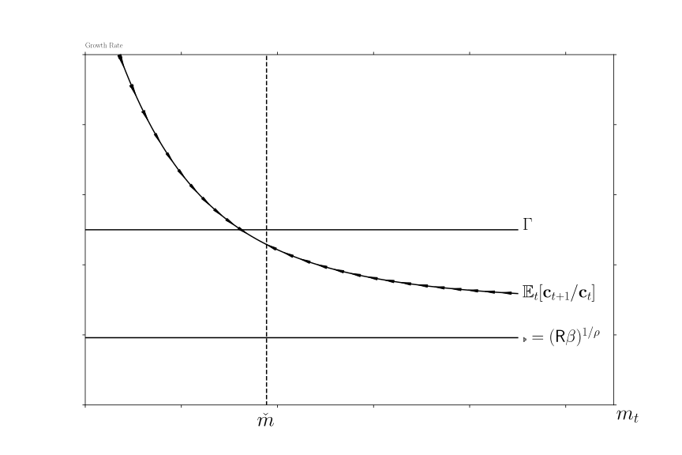
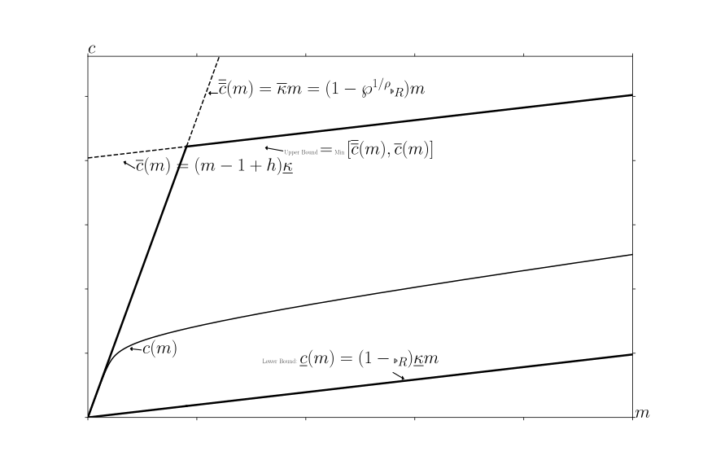
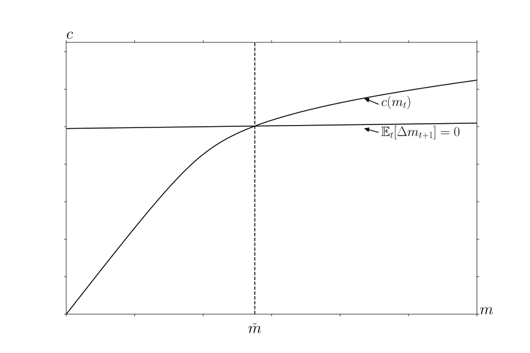
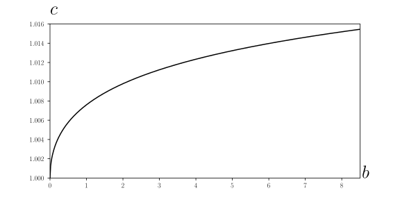

Abstract This paper builds theoretical foundations for rigorous and intuitive understanding of‘buffer stock’ saving models, pairing each theoretical result with a quantitative exploration.After describing conditions under which the consumption function exists, the paper showsthat a ‘target’ buffer stock exists only under conditions strictly stronger than those thatguarantee convergence of the consumption and value functions. Furthermore, the averagegrowth rate of consumption equals the average growth rate of permanent income (in a smallopen economy populated by buffer stock savers). Together, the (provided) numerical tools and(proven) analytical results constitute a comprehensive toolkit for understanding buffer stockmodels.
            KeywordsÂ
Precautionary saving, buffer stock saving, marginal
propensity to consume, permanent income hypothesis
The dashboardwill launch a live interactive Jupyter Notebookthat uses the Econ-ARK/HARKtoolkitto produce all of the paper’s ï¬gures (warning: the dashboard may take several minutes tolaunch).
1Contact: ccarroll@jhu.edu, Department of Economics, 590 Wyman Hall, Johns HopkinsUniversity, Baltimore, MD 21218, http://econ.jhu.edu/people/ccarroll, and National Bureau ofEconomic Research.   Â
_______________________________________________________________________________
1 Introduction
In the presence of empirically realistic transitory and permanent shocks to income a laFriedman (1957), only one further ingredient is required to construct a testable model
of optimal consumption: A description of preferences. Modelers usually assume
geometric discounting of a constant relative risk aversion utility function, because,
starting with Zeldes (1989) and Deaton (1991), a large literature has shown that
numerical solutions of such models have quantitative predictions that can match
microeconomic evidence reasonably well.
A companion theoretical literature has shown that numerical solution methods
provide good approximations to limiting “true” mathematical solutions – but only for
models more complex than the simple case with just shocks and utility. The extra
complexity has been required because standard contraction mapping theorems
(beginning with Bellman (1957) and including those building on Stokey et. al. (1989))
cannot be applied when the utility function is unbounded (like CRRA - see section
2.1).2
This paper’s ï¬rst technical contribution is to articulate the (loose) conditions under
which the simple problem (without convenient shortcuts like a consumption floor or
liquidity constraints) defines a contraction mapping with a nondegenerate consumption
function. The interesting requirement is a ‘Finite Value of Autarky’ condition. The
second contribution is to specify the conditions under which the resulting
consumption function implies existence of a ‘target’ wealth-to-permanent-income
ratio (the model exhibits ‘buffer stock’ saving behavior). Buffer stock behavior
arises when the model’s parameters satisfy a “Growth Impatience Condition”
(equation (22)) that relates preferences and uncertainty to predictable income
growth.
Even without a formal proof, target saving of this kind has been intuitively
understood to underlie central numerical results from the heterogeneous agent
macroeconomics literature; for example, the logic of target saving is central to the
explanation by Krueger, Mitman, and Perri (2016) of the fact that, during the Great
Recession, middle-class consumers cut their consumption more than the poor or the
rich. The theoretical logic articulated below explains this finding: Learning that the
future has become more uncertain does not change the urgent imperatives of
the poor (their high means they have little room to maneuver). And,
increased labor income uncertainty does not change the behavior of the rich
because it does not threaten their consumption much. Only people in the middle
have both the motivation and the wiggle-room to reduce their discretionary
spending.
Conveniently, elements required for the convergence proof also provide analytical
foundations for many other results that have become familiar from the numerical
literature. In this paper, all theoretical conclusions are paired with numerically
computed illustrations (using the open-source Econ-ARK toolkit). The insights of the
paper are instantiated in the toolkit, whose buffer stock saving module algorithmically
flags parametric choices under which a problem fails to define a contraction
mapping; a target level of wealth does not exist; or the solution is otherwise
degenerate.
The theoretical foundations provided here are valuable both because they provide
intuition about the determinants of saving targets, and because they make it easier to
develop reliable numerical solution methods (by providing necessary and sufficient
restrictions that solutions must satisfy).
The paper proceeds in three parts.
The ï¬rst part articulates the conditions required for the problem to deï¬ne a
nondegenerate limiting consumption function, and explains how the paper’s
model is more general than models previously considered in the literature.
The conditions required for convergence are interestingly parallel to those
required for the liquidity constrained perfect foresight model; that parallel is
explored and explained. Next, the paper derives some limiting properties of the
consumption function as cash approaches infinity and as it approaches its lower
bound; then the theorem is proven explaining when the problem defines a
contraction mapping. Finally, a related class of commonly-used models (exemplified
by Deaton (1991)) is shown to constitute a particular limit of this paper’s
model.
The next section examines ï¬ve key properties of the model. First, as cash
approaches inï¬nity the expected growth rate of consumption and the marginal
propensity to consume (MPC) converge to their values in the perfect foresight case.
Second, as cash approaches zero the expected growth rate of consumption
approaches infinity, and the MPC approaches a simple analytical limit. Third, if the
consumer is ‘growth impatient,’ a unique target cash-to-permanent-income
ratio will exist. Fourth, at the target cash ratio, the expected growth rate of
consumption is slightly less than the expected growth rate of permanent (noncapital)
income. Finally, the expected growth rate of consumption is declining in the
level of cash. The ï¬rst four propositions are proven under general assumptions
about parameter values; the last is shown to hold if there are no transitory
shocks, but may fail in extreme cases if there are both transitory and permanent
shocks.
Szeidl (2012) has shown that such an economy will be characterized by stable
invariant distributions for the consumption ratio, the wealth ratio, and other
variables.3
Using Szeidl’s result, the final section discusses conditions under which, even with a
fixed aggregate interest rate that differs from the time preference rate, an economy
populated by buffer stock consumers converges to a balanced growth equilibrium in
which the growth rate of consumption tends toward the (exogenous) growth rate of
permanent income.
2 The Problem
2.1 Setup
The consumer solves a standard optimization problem from the current period until
the end of life at :
where
(1)
is a constant relative risk aversion utility function with
.45
The consumer’s initial condition is deï¬ned by market resources (Deaton (1991)’s
‘cash-on-hand’) and permanent noncapital income .
In the usual treatment, a dynamic budget constraint (DBC) incorporates several
different elements that determine next period’s (given this period’s choices); but for
the detailed analysis here, it will be useful to disarticulate the steps so that individual
ingredients can be separately examined:
where indicates the consumer’s assets at the end of period
, which grow by a ï¬xed interest factor between
periods,6 so
that is the consumer’s ï¬nancial (‘bank’) balances before next period’s consumption
choice;7 (‘market resources’ or ‘money’) is the sum of ï¬nancial wealth and
noncapital income (permanent noncapital income multiplied by a
mean-one iid transitory income shock factor ; future transitory shocks are assumed
to satisfy ). Permanent noncapital income in period is
equal to its previous value, multiplied by a growth factor , modiï¬ed by a
mean-one iid shock , satisfying for
(and is the degenerate case with no permanent
shocks).89
In future periods there is a small probability that income will be
zero (a ‘zero-income event’),
(2)
where is an iid mean-one random variable () with a
distribution satisfying where (degenerately
). (See Rabault (2002) and Li and Stachurski (2014) for analyses of cases
where the shock processes have unbounded support). Call the cumulative distribution
functions and (and is derived trivially from (2) and ). Permanent
income and cash start out strictly positive, , and as usual the
consumer cannot die in debt, so
(3)
The model looks more special than it is. In particular, the assumption of a positive
probability of zero-income events may seem objectionable. However, it is easy
to show that a model with a nonzero minimum value of (motivated, for
example, by the existence of unemployment insurance) can be redefined by
capitalizing the present discounted value of minimum income into current market
assets,10
analytically transforming that model back into the model analyzed here. Also, the
assumption of a positive point mass (as opposed to positive density) for the worst realization
of the transitory shock is inessential, but simplifies the proofs and is a powerful aid to
intuition.11
This model differs from Bewley’s (1977) classic formulation in several ways. The
CRRA utility function does not satisfy Bewley’s assumption that is well
deï¬ned, or that is well deï¬ned and ï¬nite; indeed, neither the value
function nor the marginal value function will be bounded. It differs from
Schectman and Escudero (1977) in that they impose liquidity constraints and
positive minimum income. It differs from both of these in that it permits
permanent growth in income, and also permanent shocks to income, which a
large empirical literature finds are quantitatively important in micro
data12
and which since Friedman (1957) have been understood to be far more consequential for
household welfare than are transitory fluctuations. It differs from Deaton (1991) because
liquidity constraints are absent; there are separate transitory and permanent shocks (ala Muth (1960)); and the transitory shocks here can occasionally cause income to reach
zero.13
Finally, it differs from models found in Stokey et. al. (1989) because
neither liquidity constraints nor bounds on utility or marginal utility are
imposed.1415
We establish a bit more notation by reviewing the standard result that in problems of
this class (CRRA utility, permanent shocks) the number of relevant state variables can
be reduced from two ( and ) to one . Generically deï¬ning nonbold
variables as the boldface counterpart normalized by (as with in the previous
sentence), assume that value in the last period of life is , and consider the
problem in the second-to-last period,
where the last line follows because for the CRRA utility function (1), .
Now, in a one-time deviation from the notational convention established
in the last paragraph, deï¬ne nonbold ‘normalized value’ not as but
as , because this allows us to exploit features of the related
problem,
where is a ‘growth-normalized’ return factor, and the new problem’s
first order condition is
This logic induces to all earlier periods, so that if we solve the normalized
one-state-variable problem (4), we will have solutions to the original problem for any
from:
2.3 Deï¬nition of a Nondegenerate Solution
We say that this problem has a nondegenerate solution if, as the number of remaining
periods of life gets arbitrarily large, the backward-iterating solution defines a unique
limiting consumption function that satisï¬es
(5)
for every (‘Degenerate’ limits will be cases where the limiting
consumption function is or .)
2.4 Perfect Foresight Benchmarks
The familiar analytical solution to the perfect foresight specialization of the
model, obtained by setting and , allows us to deï¬ne
some remaining notation and terminology, providing a convenient reference
point.
2.4.1 Human Wealth
The dynamic budget constraint, strictly positive marginal utility, and the
can’t-die-in-debt condition (3) imply an exactly-holding intertemporal budget
constraint (IBC):
(6)
where is nonhuman wealth and is ‘human wealth,’ and with a constant
,
(7)
This equation makes plain that in order for to be ï¬nite, we must
impose the Finite Human Wealth Condition (‘FHWC’):
(8)
Intuitively, for human wealth to be finite, the growth rate of (noncapital) income must
be smaller than the interest rate at which that income is being discounted.
2.4.2 Unconstrained Solution
The consumption Euler equation holds in every period; with ,
(9)
where the Old English letter ‘thorn’ represents what we will call the ‘absolute patience factor’
.16
The sense in which captures patience is that if the ‘absolute impatience condition’
(AIC) holds,
(10)
the consumer will choose to spend an amount too large to sustain indefinitely (the level
of consumption must fall over time). We call such a consumer ‘absolutely impatient’
(the key condition in Bewley (1977)).
We next deï¬ne a ‘return patience factor’ that relates absolute patience to the return
factor:
(11)
and since consumption is growing by but discounted by :
which defines a normalized finite-horizon perfect foresight consumption function
(13)
where is the marginal propensity to consume (MPC) because it answers the
question ‘if the consumer had an extra unit of wealth, how much more would be spent.’
(The overbar on reflects the fact that this will be an upper bound as we modify the
problem to incorporate constraints and uncertainty; analogously, the underbar for
indicates that it is a lower bound). Equation (12) makes plain that for the limiting
MPC to be strictly positive as goes to inï¬nity we must impose the Return
Impatience Condition (RIC):
(14)
so that
(15)
The RIC thus imposes a second kind of ‘impatience:’ The consumer cannot be so
pathologically patient as to wish, in the limit as the horizon approaches infinity, to
spend nothing today out of an increase in current wealth; that is, the condition rules
out the degenerate limiting solution . Because the return patience factor
is the absolute patience factor divided by the return, we call equation (14) the ‘return
impatience condition’ or RIC; we will say that a consumer who satisfies the condition is
‘return impatient.’
Given that the RIC holds, and deï¬ning limiting objects by the absence of a time
subscript (e.g., ), the limiting consumption function will
be
(16)
and we now see that in order to rule out the degenerate limiting solution
we need to be ï¬nite; that is, we must impose the ï¬nite human wealth condition
(8).
A ï¬nal useful point is that since the perfect foresight growth factor for
consumption is , yields an analytical expression for
value:
which asymptotes to a ï¬nite number as approaches if
17 with
a bit of algebra,18
this requirement can be shown to be equivalent to the RIC. Thus, the same conditions
that guarantee a nondegenerate limiting consumption function also guarantee a
nondegenerate limiting value function (which, interestingly, will not be true in the
version of the model below that incorporates uncertainty).
2.4.3 Constrained Solution
If a liquidity constraint requiring is ever to be relevant, it must be relevant at
the lowest possible level of market resources, , which obtains for a consumer
who enters period with . The constraint is ‘relevant’ if it prevents the choice
that would otherwise be optimal; at the constraint is relevant if the marginal
utility from spending all of today’s resources , exceeds the marginal utility
from doing the same thing next period, ; that is, if such choices would violate
the Euler equation (4):
(17)
By analogy to the return patience factor, we therefore deï¬ne a ‘perfect foresight
growth patience factor’ (PF-GPF) as
(18)
and define a ‘perfect foresight growth impatience condition’ (PF-GIC)
(19)
which is equivalent to (17) (exponentiate both sides by ).
If the RICÂ (14) and the FHWCÂ (8) hold, appendix A shows that, for some ,
an unconstrained consumer behaving according to (16) would choose for all
. The solution to the constrained consumer’s problem in this case is simple: For
any the constraint does not bind (and will never bind in the future) so the
constrained consumption function is identical to the unconstrained one. If the consumer were
somehow19
to arrive at an the constraint would bind and the consumer would have
to consume . We use the accent to designate the limiting constrained
consumption function:
(20)
More useful is the case where the perfect foresight growth and return impatience
conditions both hold. In this case appendix A shows that the limiting constrained
consumption function is piecewise linear, with up to a ï¬rst ‘kink point’ at
, and with discrete declines in the MPC at a set of kink points .
As the constrained consumption function becomes arbitrarily close to
the unconstrained , and the marginal propensity to consume function
limits to . Similarly, the value function is nondegenerate and
limits into the value function of the unconstrained consumer. This logic holds even
when the ï¬nite human wealth condition fails (denoted ): A solution
exists because the constraint prevents the consumer from borrowing against
infinite human wealth to finance infinite current consumption. Under these
circumstances, the consumer who starts with any amount of resources
will, over time, run those resources down so that by some finite number of
periods in the future the consumer will reach , and thereafter
will set for eternity, a policy that will (using (17)) yield value of
which will be finite whenever
which we call the Perfect Foresight Finite Value of Autarky Condition, PF-FVAC,
because it guarantees that a consumer who always spends all permanent income will
have finite value (the consumer has ‘finite autarky value’). Note that the version of the
PF-FVACÂ in (21) implies the PF-GICÂ whenever () holds. So,
if , value for any ï¬nite will be the sum of two ï¬nite numbers: The
component due to the unconstrained consumption choice made over the finite horizon
leading up to , and the ï¬nite component due to the value of consuming all
thereafter (that is, for . The consumer’s value function is therefore
nondegenerate.
The most peculiar possibility occurs when the RICÂ fails. Under these circumstances
the FHWC must also fail (Appendix A), and the constrained consumption function is
nondegenerate. (See Figure 6 for a numerical example). While it is true that
, nevertheless the limiting constrained consumption function
is strictly positive and strictly increasing in . This result interestingly reconciles the
conflicting intuitions from the unconstrained case, where would suggest a
degenerate limit of while would suggest a degenerate limit of
.
Tables 3 and 4 (and appendix table 5) codify the key points to help the
reader keep them straight (and to facilitate upcoming comparisons with the
results in the presence of uncertainty but the absence of liquidity constraints
(correspondingly tabulated)). The model without constraints but with uncertainty
will turn out to be a close parallel to the model with constraints but without
uncertainty.
2.5 Uncertainty-Modiï¬ed Conditions
2.5.1 Impatience
Now deï¬ne and .
When uncertainty is introduced, the expectation of can be rewritten
as:
where Jensen’s inequality guarantees that the expectation of the inverse of the
permanent shock is strictly greater than one. It will be convenient to define the object
because this permits us to write expressions like the RHS of (21) compactly as, e.g.,
20
We refer to this as the ‘compensated return,’ because it compensates (in a risk-neutral
way) for the effect of uncertainty on the expected growth-normalized return (in the
sense implicitly deï¬ned in (21)).
We can now transparently generalize the PF-GIC (19) by deï¬ning a ‘compensated
growth factor’
(21)
and a compensated Growth Patience Pactor (GPF):
and a straightforward derivation ((32) below) yields the conclusion that
which implies that if we wish to prevent from heading to inï¬nity (that
is, if we want to be expected to fall for some large enough value of
) we must impose a generalized version of the Perfect Foresight Growth
Impatience Condition (19); we call the ‘growth impatience condition’
(GIC) the requirement that the Growth Patience Factor must be less than
1:21
(22)
which is stronger than the perfect foresight version (19) because (Jensen’s
inequality implies that for nondegenerate ).
2.5.2 Autarky Value
Analogously to (17), a consumer who spent exactly their permanent income every
period would have value determined by the product of the expectation of the
(independent) future shocks to permanent income:
which invites the deï¬nition of a utility-compensated equivalent of the permanent
shock,
which will satisfy for and nondegenerate (and for the
reasonable (though not required) case of ); deï¬ning
(23)
we can see that will be ï¬nite as approaches if
which we call the ‘finite value of autarky’ condition (FVAC) because it guarantees that
value is finite for a consumer who always consumes their (now stochastic) permanent
income. For nondegenerate , this condition is stronger (harder to satisfy in the
sense of requiring lower ) than the perfect foresight version (21) because
.22
2.6 The Baseline Numerical Solution
Figure 1 depicts the successive consumption rules that apply in the last period of life
, the second-to-last period, and various earlier periods under the
baseline parameter values listed in Table 2. (The 45 degree line is labelled as
because in the last period of life it is optimal to spend all remaining
resources.)
Table 1:Microeconomic Model Calibration
Table 2:Model Characteristics Calculated from Parameters
Figure 1:Convergence of the Consumption Rules
In the ï¬gure, the consumption rules appear to converge as the horizon recedes (our
purpose is to show that this appearance is not deceptive); we call the limiting
infinite-horizon consumption rule
(24)
2.7 Concave Consumption Function Characteristics
A precondition for the main proof is that the maximization problem (4)
defines a sequence of continuously differentiable strictly increasing strictly
concave23 functions
.24
The straightforward but tedious proof is relegated to appendix B. For present purposes,
the most important point is the following intuition: for all periods
because a consumer who spent all available resources would arrive in period with
balances of zero, and then might earn zero noncapital income over the remaining
horizon (an unbroken series of zero-income events is unlikely but possible). In such a
case, the budget constraint and the can’t-die-in-debt condition mean that the consumer
would be forced to spend zero, incurring negative infinite utility. To avoid
this disaster, the consumer never spends everything. (This is an example of
the ‘natural borrowing constraint’ induced by a precautionary motive, per
Zeldes (1989)).25
2.8 Bounds for the Consumption Functions
The consumption functions depicted in Figure 1 appear to have limiting slopes as
and as . This section conï¬rms that impression and derives
those slopes, which also turn out to be useful in the contraction mapping
proof.2627
Assume (as discussed above) that a continuously differentiable concave consumption
function exists in period , with an origin at , a minimal
MPC , and maximal MPC . (If these will be
; for earlier periods they will exist by recursion from the following
arguments.)
The MPC bound as wealth approaches inï¬nity is easy to understand: In this case,
under our imposed assumption that human wealth is finite, the proportion of
consumption that will be financed out of human wealth approaches zero. The
consequence is that the proportional difference between the solution to the model with
uncertainty and the perfect foresight model shrinks to zero.
In the course of proving this, appendix F provides a recursive expression for the
(inverse of the) limiting MPC:
(25)
2.8.1 Weak RIC Conditions
There is a parallel expression for the limiting maximal MPC as : appendix
equation (64) shows that, as ,
(26)
Then is a decreasing convergent sequence if the ‘weak return patience
factor’ satisï¬es:
(27)
a condition that we dub the ‘Weak Return Impatience Condition’ (WRIC) because with
it will hold more easily (for a larger set of parameter values) than the
RICÂ ().
The essence of the argument is that as wealth approaches zero, the overriding
consideration that limits consumption is the (recursive) fear of the zero income events.
(That consideration is why the probability of the zero income event appears in the
expression.)
We are now in position to observe that the optimal consumption function must
satisfy
(28)
because consumption starts at zero and is continuously differentiable (as argued above),
is strictly concave (Carroll and Kimball (1996)), and always exhibits a slope between
and (the formal proof is provided in appendix D).
These limits are useful at least in the sense that they can be hard-wired into a
solution algorithm for the model, which has the potential to make the solution more
efficient (cf. Carroll, Chipeniuk, Tokuoka, and Wu (2020)). Alternatively, they can
provide a useful check on the accuracy of a solution algorithm that does not impose
them directly.
2.9 Conditions Under Which the Problem Deï¬nes a Contraction Mapping
To prove that the consumption rules converge, we need to show that the problem
defines a contraction mapping. This cannot be proven using the standard theorems in,
say, Stokey et. al. (1989), which require marginal utility to be bounded over the space
of possible values of , because the possibility (however unlikely) of an unbroken
string of zero-income events for the remainder of life means that as approaches zero
must approach zero (see the discussion in 2.7); thus, marginal utility is unbounded.
Although a recent literature examines the existence and uniqueness of solutions to
Bellman equations in the presence of ‘unbounded returns’ (see, e.g., Matkowski and
Nowak (2011)), the techniques in that literature cannot be used to solve the problem
here because the required conditions are violated by a problem that involves permanent
shocks.28
Fortunately, Boyd (1990) provided a weighted contraction mapping theorem that
Alvarez and Stokey (1998) showed could be used to address the homogeneous case (of
which CRRA formulation is an example) in a deterministic framework; later,
Durán (2003) showed how to extend the Boyd (1990) approach to the stochastic
case.
Deï¬nition 1.Consider any functionwhereis the space ofcontinuous functions fromto. Supposewithand. Thenis-bounded if the-norm of,
(29)
is ï¬nite.
For deï¬ned as the set of functions in that are -bounded; ,
, , and as examples of -bounded functions; and using to
indicate the function that returns zero for any argument, Boyd (1990) proves the
following.
We can show that our operator satisï¬es the conditions that Boyd requires of his
operator , if we impose two restrictions on parameter values. The ï¬rst is the
WRICÂ necessary for convergence of the maximal MPC, equation (27) above. A more
serious restriction is the utility-compensated Finite Value of Autarky condition,
equation (24). (We discuss the interpretation of these restrictions in detail in section
2.11 below.) Imposing these restrictions, we are now in position to state the central
theorem of the paper.
Theorem 1.is a contraction mapping if the restrictions on parameter values
(27) and (24) are true (that is, if the weak return impatience condition and theï¬nite value of autarky condition hold).
Intuitively, Boyd’s theorem shows that if you can ï¬nd a that is everywhere ï¬nite
but goes to inï¬nity ‘as fast or faster’ than the function you are normalizing with ,
the normalized problem defines a contraction mapping. The intuition for the FVAC
condition is just that, with an infinite horizon, with any initial amount of bank balances
, in the limit your value can always be made greater than you would get by
consuming exactly your permanent income every period (say, by consuming
for some small ).
The details of the proof are cumbersome, and are therefore relegated to appendix D.
Given that the value function converges, appendix D.3 shows that the consumption
functions converge.
2.10 The Liquidity Constrained Solution as a Limit
This section shows that a related problem commonly considered in the literature (e.g.,
with a simpler income process, by Deaton (1991)), with a liquidity constraint and a
positive minimum value of income, is the limit of the problem considered here as the
probability of the zero-income event approaches zero.
The essence of the argument is easy to state. As noted above, there is a ï¬nite
possibility of earning zero income over the remainder of the horizon, which prevents the
consumer from ending the current period with zero assets because with some finite
probability the consumer would be forced to consume zero, which would be infinitely
painful.
But the extent to which the consumer feels the need to make this precautionary
provision depends on the probability that it will turn out to matter. As , that
probability becomes arbitrarily small, so the amount of precautionary saving
approaches zero. But zero precautionary saving is the amount of saving that a liquidity
constrained consumer with perfect foresight would choose.
Another way to think about this is just to think of the liquidity constraint as
being imposed by specifying a component of the utility function that is zero
whenever the consumer ends the period with (strictly) positive assets, but
negative infinity if the consumer ended the period with (weakly) negative
assets.
See appendix G for the formal proof justifying the foregoing intuitive discussion.
2.11 Discussion of Parametric Restrictions
2.11.1 The RIC
In the perfect foresight unconstrained problem (section 2.4.2), the RIC was required
for existence of a nondegenerate solution. It is surprising, therefore, that in the presence
of uncertainty, the RIC is neither necessary nor sufficient for a nondegenerate
solution.
We thus begin our discussion by asking what features the problem must exhibit (given
the FVAC) if the RICÂ fails (that is, :
but since and (because we have assumed ), this can
hold only if ; that is, given the FVAC, the RICÂ can fail only if human wealth
is unbounded. Unbounded human wealth is permitted here, as in the perfect foresight
liquidity constrained problem. But, from equation (25), an implication of is that
. Thus, interestingly, the presence of uncertainty both permits
unlimited human wealth and at the same time prevents that unlimited wealth from
resulting in infinite consumption. That is, in the presence of uncertainty, pathological
patience (which in the perfect foresight model with finite wealth results in
consumption of zero) plus infinite human wealth (which the perfect foresight model
rules out because it leads to infinite consumption) combine here to yield a
unique ï¬nite limiting MPC for any ï¬nite value of . Note the close parallel
to the conclusion in the perfect foresight liquidity constrained model in the
{PF-GIC,} case (for detailed analysis of this case see the appendix). There,
too, the tension between infinite human wealth and pathological patience was
resolved with a nondegenerate consumption function whose limiting MPC was
zero.
2.11.2 The WRIC
The ‘weakness’ of the additional requirement for contraction, the weak RIC, can be
seen by asking ‘under what circumstances would the FVAC hold but the WRIC fail?’
Algebraically, the requirement is
(31)
If there were no conceivable parameter values that could satisfy both of these
inequalities, the WRICÂ would have no force; it would be redundant. And if we require
, the WRICÂ is indeed redundant because now , so that the
RICÂ (and WRIC) must hold.
But neither theory nor evidence demands that we assume . We can
therefore approach the question of the WRIC’s relevance by asking just how low
must be for the condition to be relevant. Suppose for illustration that
, , and . In that case (31) reduces
to
but since by assumption, the binding requirement is that
so that for example if we would need (that is, a perpetual
riskfree rate of return of worse than -90 percent a year) in order for the WRICÂ to bind.
The relevance of the WRIC is indeed “Weak.”
Perhaps the best way of thinking about this is to note that the space of parameter
values for which the WRICÂ is relevant shrinks out of existence as , which
section 2.10 showed was the precise limiting condition under which behavior becomes
arbitrarily close to the liquidity constrained solution (in the absence of other risks). On
the other hand, when , the consumer has no noncapital income (so that the
FHWCÂ holds) and with the WRICÂ is identical to the RIC; but the RICÂ is the
only condition required for a solution to exist for a perfect foresight consumer with
no noncapital income. Thus the WRIC forms a sort of ‘bridge’ between the
liquidity constrained and the unconstrained problems as moves from 0 to
1.
2.11.3 When the GICÂ Fails
If both the GICÂ and the RICÂ hold, the arguments above establish that the
limiting consumption function asymptotes to the consumption function for the
perfect foresight unconstrained function. The more interesting case is where the
GICÂ fails.
A solution that satisï¬es the combination FVAC and is depicted in Figure 2. The
consumption function is shown along with the locus that
identiï¬es the ‘sustainable’ level of spending at which is expected to remain
unchanged. The diagram suggests a fact that is confirmed by deeper analysis: Under
the depicted configuration of parameter values (see the code for details), the
consumption function never reaches the locus; indeed, when
the RIC holds but the GIC does not, the consumption function’s limiting
slope is shallower than that of the sustainable consumption locus
,32
so the gap between the two actually increases with in the limit. Although a
nondegenerate consumption function exists, a target level of does not (or, rather,
the target is ), because no matter how wealthy a consumer becomes, the
consumer will always spend less than the amount that would keep stable (in
expectation).
Figure 2:Example Solution when FVAC Holds but GIC Does Not
For the reader’s convenience, Tables 3 and 4 present a summary of the connections
between the various conditions in the presence and the absence of uncertainty.
Table 3:Deï¬nitions and Comparisons of Conditions
Table 4:Sufficient Conditions for Nondegenerate Solution
For feasible, the limiting consumption function deï¬nes the unique value ofsatisfying.  RIC,FHWC are necessary as well as sufficient.  Solution also exists forandRIC, but is identical to the unconstrained model’s solution for feasible.
3 Analysis of the Converged Consumption Function
Figures 3 and 4a,b capture the main properties of the converged consumption rule when the RIC, GIC,
and FHWCÂ all hold.33
Figure 3 shows the expected consumption growth factor for a consumer
behaving according to the converged consumption rule, while Figures 4a,b illustrate
theoretical bounds for the consumption function and the marginal propensity to
consume.
Five features of behavior are captured, or suggested, by the ï¬gures. First,
as the expected consumption growth factor goes to , indicated
by the lower bound in Figure 3, and the marginal propensity to consume
approaches (Figure 4), the same as the perfect foresight
MPC.34
Second, as the consumption growth factor approaches (Figure 3) and the
MPC approaches (Figure 4). Third (Figure 3), there is a target
cash-on-hand-to-income ratio such that if then , and (as
indicated by the arrows of motion on the curve), the model’s dynamics are
‘stable’ around the target in the sense that if then cash-on-hand will rise (in
expectation), while if , it will fall (in expectation). Fourth (Figure 3), at the
target , the expected rate of growth of consumption is slightly less than the
expected growth rate of permanent noncapital income. The final proposition suggested
by Figure 3 is that the expected consumption growth factor is declining in the level
of the cash-on-hand ratio . This turns out to be true in the absence of
permanent shocks, but in extreme cases it can be false if permanent shocks are
present.35

Figure 3:Target , Expected Consumption Growth, and Permanent Income
Growth
3.1 Limits as
Deï¬ne
which is the solution to an infinite-horizon problem with no noncapital
income (); clearly , since allowing
the possibility of future noncapital income cannot reduce current
consumption.36
Assuming the FHWC holds, the inï¬nite horizon perfect foresight solution (16)
constitutes an upper bound on consumption in the presence of uncertainty, since Carroll
and Kimball (1996) show that the introduction of uncertainty strictly decreases the
level of consumption at any .
Thus, we can write
But
so as , and the continuous differentiability and strict concavity
of therefore implies
because any other fixed limit would eventually lead to a level of consumption either
exceeding or lower than .
Figure 4 conï¬rms these limits visually. The top plot shows the converged
consumption function along with its upper and lower bounds, while the lower plot
shows the marginal propensity to consume.
Figure 4:Limiting MPC’s

(a)Bounds

(b)Target
Figure 5:The Consumption Function
Next we establish the limit of the expected consumption growth factor as
:
But
and
while
(32)
because 37
and which goes to zero as goes to
infinity.
Hence we have
so as cash goes to inï¬nity, consumption growth approaches its value in the perfect
foresight model.
This argument applies equally well to the problem of the restrained consumer,
because as approaches inï¬nity the constraint becomes irrelevant (assuming the
FHWCÂ holds).
3.2 Limits as
Now consider the limits of behavior as gets arbitrarily small.
Now using the continuous differentiability of the consumption function along with
L’Hôpital’s rule, we have
Figure 4 conï¬rms that the numerical solution method obtains this limit for the MPC
as approaches zero.
For consumption growth, as we have
where the second-to-last line follows because is
positive, and the last line follows because the minimum possible realization of is
so the minimum possible value of expected next-period consumption is
positive.38
3.3 There Exists Exactly One Target Cash-on-Hand Ratio, which is Stable
We now prove the existence of a target cash-on-hand-to-income ratio
towards which an agent’s expects to move. (The accent is meant to
invoke the fact that this is the value that other ’s ‘point to.’) We state the
necessary conditions for the existence of and its properties in the following
theorem.
Theorem 2.For the problem deï¬ned in section 2.1, if the (22), and
(27), then there exists a unique cash-on-hand-to-income ratiosuchthat
(33)
Moreover,is stable in the sense that
The elements of the proof are:
Existence and continuity of
Existence of a point where
is monotonically decreasing
3.3.1 Existence and Continuity of .
The consumption function exists because we have imposed the conditions (the
and ) that theorem 1 establishes are sufficient for its existence. (Indeed,
Appendix C shows that is not just continuous, but twice continuously
differentiable.)
Section 2.7 shows that for all , . Since ,
even if takes on its minimum value of 0, , since both and are
strictly positive under our foregoing assumptions. With , the ratio
inherits continuity (and, for that matter, continuous differentiability)
from the consumption function.
3.3.2 Existence of a point where .
Section 3.2 shows that , while the limit as goes to
infinity is
where the last two lines are merely a restatement of the GICÂ (22).
The Intermediate Value Theorem tells us that if is continuous, and
takes on values above and below 1, there must be at least one point at which it is equal
to one.
3.3.3 is monotonically decreasing.
Now deï¬ne and note that
so that . Our goal is to prove that is strictly decreasing on
since
Note that the statement of theorem 2 did not require the RIC to hold. Now, we show
that (given our other assumptions) is decreasing (but for different reasons)
whether the RIC holds or fails ().
IfRICholds. We show elsewhere that if the RIC holds then so
that
which is negative because the GIC says .
IfRICfails. Under , recall that . Concavity of the
consumption function means that is a decreasing function, so everywhere
which means that from (34) is guaranteed to be negative if
(34)
But the combination of the GIC holding and the RIC failing can be written:
The foregoing arguments rely on the continuous differentiability of ,
so the arguments do not directly go through for the restrained consumer’s
problem in which the existence of liquidity constraints can lead to discrete
changes in the slope at particular values of . But we can use the
fact that the restrained model is the limit of the baseline model as to
conclude that there is likely a unique target cash level even in the restrained
model.
If consumers are sufficiently impatient, the limiting target level in the restrained
model will be . That is, if a consumer starting with will
save nothing, , then the target level of in the restrained model
will be 1; if a consumer with would choose to save something, then
the target level of cash-on-hand will be greater than the expected level of
income.
3.4 Expected Consumption Growth at Target Is Less than Expected Permanent
Income Growth
In Figure 3 the intersection of the target cash-on-hand ratio locus at with the
expected consumption growth curve lies below the intersection with the horizontal line
representing the growth rate of expected permanent income. This can be proven as
follows.
Strict concavity of the consumption function implies that if
then
and since and it is clear that
cov which implies that the entire term added to in (35) is
negative, as required.
3.5 Expected Consumption Growth Is a Declining Function of (or Is
It?)
Figure 3 depicts the expected consumption growth factor as a strictly declining
function of the cash-on-hand ratio. To investigate this, define
and the proposition in which we are interested is
or differentiating through the expectations operator, what we want is
(35)
Henceforth indicating appropriate arguments by the corresponding subscript
(e.g. ), since , the portion of the LHS of equation (35)
in brackets can be manipulated to yield
Now differentiate the Euler equation with respect to :
but since we can see from (36) that (35) is equivalent to
The latter proposition is obviously true under our assumption . The former
will be true if
The two shocks cause two kinds of variation in . Variations due to
satisfy the proposition, since a higher draw of both reduces and
reduces the marginal propensity to consume. However, permanent shocks have
conflicting effects. On the one hand, a higher draw of will reduce , thus
increasing both and . On the other hand, the term is
multiplied by , so the effect of a higher could be to decrease the
first term in the covariance, leading to a negative covariance with the second
term. (Analogously, a lower permanent shock can also lead a negative
correlation.)
The software archive associated with this paper presents an example in which this
perverse effect dominates. However, extreme assumptions were required (in particular, a
very small probability of the zero-income shock) and the region in which was
tiny. In practice, for plausible parametric choices, should generally
hold.
4 The Aggregate and Idiosyncratic Relationship Between Consumption Growth and
Income Growth
This section examines the behavior of large collections of buffer-stock consumers with
identical parameter values. Such a collection can be thought of as either a
subset of the population within a single country (say, members of a given
education or occupation group), or as the whole population in a small open
economy.40
Formally, we assume a continuum of ex ante identical households
on the unit interval, with constant total mass normalized to one and
indexed by , all behaving according to the model speciï¬ed
above.41
Szeidl (2012) proves that such a population will be characterized by an invariant distribution
of that induces invariant distributions for and ; designate these , , and
.42
4.1 Consumption and Income Growth at the Household Level
It is useful to deï¬ne the operator which yields the mean value of its argument in
the population, as distinct from the expectations operator which represents
beliefs about the future.
An economist with a microeconomic dataset could calculate the average growth rate
of idiosyncratic consumption, and would find
where and the last equality follows because the invariance of (see Szeidl (2012)) means that
.43
Thus, in a population that has reached its invariant distribution, the growth rate of
idiosyncratic log consumption matches the growth rate of idiosyncratic log permanent
income.
4.2 Growth Rates of Aggregate Income and Consumption
Attanasio and Weber (1995) point out that concavity of the consumption function (or
other nonlinearities) can imply that it is quantitatively important to distinguish
between the growth rate of average consumption and the average growth rate of
consumption.44
We have just examined the average growth rate; we now examine the growth rate of the
average.
Using boldface capital letters for aggregate variables, the growth factor for aggregate
income is given by:
because of the independence assumptions we have made about and .
The growth factor for aggregate assets is:
where the second-to-last line follows from Szeidl (2012)’s proof the ergodicity of
the distributions of normalized variables for this problem, which implies that
.
Unfortunately, it is clear that the covariance term in the numerator, while generally
small, will not in general be zero. This is because the realization of the permanent shock
has a nonlinear effect on .
One way of thinking about this is that it reflects the fact that, under our
assumptions, the variable does not have an ergodic distribution; the distribution of
permanent income becomes forever wider and wider as time progress in this
model.
There is a simple solution to that problem, however. In practice most modelers
incorporate a constant positive probability of death in their models, following
Blanchard (1985). Carroll, Slacalek, Tokuoka, and White (2017) show that for
probabilities of death that exceed a threshold that depends on the size of the
permanent shocks, the distribution of permanent income has a finite variance. In such
cases, numerical results confirm the intuition that the growth rate of aggregate assets
ends up matching the growth rate of permanent income.
Matters are simpler if there are no permanent shocks; see E for a proof that in that
case the growth rate of assets (and other variables) does eventually converge to the
growth rate of aggregate permanent income.
5 Conclusions
This paper provides theoretical foundations for many characteristics of buffer stock
saving models that have heretofore been observed in numerical solutions but not
proven. Perhaps the most important such proposition is the existence of a target
cash-to-permanent-income ratio toward which actual resources will move. The intuition
provided by the existence of such a target can be a powerful aid to understanding a
host of numerical results.
Another contribution is integration of the paper’s results with the open-source
Econ-ARK toolkit, which is used to generate all of the quantitative results of the
paper, and which integrally incorporates all of the analytical insights of the
paper.
Appendices
A Perfect Foresight Liquidity Constrained Solution
Under perfect foresight in the presence of a liquidity constraint requiring , this
appendix taxonomizes the varieties of the limiting consumption function
that arise under various parametric conditions. Results are summarized in
table 5.
Table 5:Taxonomy of Perfect Foresight Liquidity Constrained Model Outcomes
Conditions are applied from left to right; for example, the second row indicates conclusions in thecase whereandRIC both hold, while the third row indicates that when thePF-GIC andtheRIC both fail, the consumption function is degenerate; the next row indicates that whenever thePF-GIC holds, the constraint will bind in ï¬nite time.
A.1 If PF-GICÂ Fails
A consumer is ‘growth patient’ if the perfect foresight growth impatience condition fails
(, ). Under the constraint does not bind at the
lowest feasible value of because implies that spending
everything today (setting ) produces lower marginal utility than is
obtainable by reallocating a marginal unit of resources to the next period at return
:45
Similar logic shows that under these circumstances the constraint will never bind at
for a constrained consumer with a ï¬nite horizon of periods, so for
such a consumer’s consumption function will be the same as for the unconstrained case
examined in the main text.
If the RIC fails () while the ï¬nite human wealth condition holds,
the limiting value of this consumption function as is the degenerate
function
(36)
(that is, consumption is zero for any level of human or nonhuman wealth).
If the RICÂ fails and the FHWCÂ fails, human wealth limits to so the
consumption function limits to either or depending on
the relative speeds with which the MPC approaches zero and human wealth approaches
.46
Thus, the requirement that the consumption function be nondegenerate implies
that for a consumer satisfying we must impose the RICÂ (and the
FHWCÂ can be shown to be a consequence of and RIC). In this case, the
consumer’s optimal behavior is easy to describe. We can calculate the point
at which the unconstrained consumer would choose from equation
(16):
(37)
which (under these assumptions) satisfies
.47
For the unconstrained consumer would choose to consume more
than ; for such , the constrained consumer is obliged to choose
.48
For any the constraint will never bind and the consumer will choose to spend
the same amount as the unconstrained consumer, .
(Stachurski and Toda (2019) obtain a similar lower bound on consumption and use it
to study the tail behavior of the wealth distribution.)
A.2 If PF-GICÂ Holds
Imposition of the PF-GICÂ reverses the inequality in (36), and thus reverses the
conclusion: A consumer who starts with will desire to consume more than 1.
Such a consumer will be constrained, not only in period , but perpetually
thereafter.
Now deï¬ne as the such that an unconstrained consumer holding
would behave so as to arrive in period with (with
trivially equal to 0); for example, a consumer with was on the
‘cusp’ of being constrained in period : Had been inï¬nitesimally
smaller, the constraint would have been binding (because the consumer would
have desired, but been unable, to enter period with negative, not zero, ).
Given the PF-GIC, the constraint certainly binds in period (and thereafter)
with resources of : The consumer cannot spend more
(because constrained), and will not choose to spend less (because impatient), than
.
We can construct the entire ‘prehistory’ of this consumer leading up to as follows.
Maintaining the assumption that the constraint has never bound in the past, must
have been growing according to , so consumption periods in the past must have
been
(38)
The PDV of consumption from until can thus be computed as
and note that the consumer’s human wealth between and (the relevant time
horizon, because from onward the consumer will be constrained and unable to access
post- income) is
(39)
while the intertemporal budget constraint says
from which we can solve for the such that the consumer with
would unconstrainedly plan (in period ) to arrive in period with
:
(40)
Deï¬ning , consider the function deï¬ned by linearly
connecting the points for integer values of (and setting
for ). This function will return, for any value of , the
optimal value of for a liquidity constrained consumer with an inï¬nite horizon.
The function is piecewise linear with ‘kink points’ where the slope discretely
changes; for inï¬nitesimal the MPC of a consumer with assets is
discretely higher than for a consumer with assets because the latter
consumer will spread a marginal dollar over more periods before exhausting
it.
In order for a unique consumption function to be deï¬ned by this sequence (40) for
the entire domain of positive real values of , we need to become arbitrarily large
with . That is, we need
(41)
A.2.1 If FHWCÂ Holds
The FHWCÂ requires , in which case the second term in (40) limits to a
constant as , and (41) reduces to a requirement that
Given the PF-GIC , this will hold iff the RIC holds, . But given that
the FHWCÂ holds, the PF-GICÂ is stronger (harder to satisfy) than the RIC;
thus, the FHWC and the PF-GIC together imply the RIC, and so a well-defined
solution exists. Furthermore, in the limit as approaches inï¬nity, the difference
between the limiting constrained consumption function and the unconstrained
consumption function becomes vanishingly small, because the date at which the
constraint binds becomes arbitrarily distant, so the effect of that constraint on current
behavior shrinks to nothing. That is,
(42)
A.2.2 If FHWCÂ Fails
If the FHWCÂ fails, matters are a bit more complex.
IfRICÂ Holds. When the RICÂ holds, rearranging (43) gives
and for this to be true we need
which is merely the RICÂ again. So the problem has a solution if the RICÂ holds. Indeed,
we can even calculate the limiting MPC from
(43)
which with a bit of algebra49
can be shown to asymptote to the MPC in the perfect foresight
model:50
(45)
IfRICÂ Fails. Consider now the case, . We can rearrange (43)as
which makes clear that with and the
numerators and denominators of both terms multiplying can be seen
transparently to be positive. So, the terms multiplying in (43) will be positive if
which is merely the PF-GIC which we are maintaining. So the ï¬rst term’s limit is
. The combined limit will be if the term involving goes
to faster than the term involving goes to ; that is, if
which merely conï¬rms the starting assumption that the RIC fails.
What is happening here is that the term is increasing backward in time at rate
dominated in the limit by while the term is increasing at a rate dominated
by term and
because
Consequently, while , the limit of the ratio in (43) is zero.
Thus, surprisingly, the problem has a well defined solution with infinite human
wealth if the RICÂ fails. It remains true that implies a limiting MPC of
zero,
(48)
but that limit is approached gradually, starting from a positive value, and
consequently the consumption function is not the degenerate . (Figure 6
presents an example for , , , ; note that the
horizontal axis is bank balances ; the part of the consumption
function below the depicted points is uninteresting – – so not worth
plotting).

Figure 6:Nondegenerate Consumption Function with and
We can summarize as follows. Given that the PF-GICÂ holds, the interesting question
is whether the FHWCÂ holds. If so, the RICÂ automatically holds, and the solution
limits into the solution to the unconstrained problem as . But even if the
FHWC fails, the problem has a well-defined and nondegenerate solution, whether or
not the RICÂ holds.
Although these results were derived for the perfect foresight case, we know from work
elsewhere in this paper and in other places that the perfect foresight case is an upper
bound for the case with uncertainty. If the upper bound of the MPC in the perfect
foresight case is zero, it is not possible for the upper bound in the model with
uncertainty to be greater than zero, because for any the level of consumption in
the model with uncertainty would eventually exceed the level of consumption in the
absence of uncertainty.
Ma and Toda (2020) characterize the limits of MPC in a more general framework
that allows for non-CRRA utility as well as capital and labor income risks in a
Markovian setting, and find that in that much more general framework the limiting
MPC is also zero.
B Existence of a Concave Consumption Function
To show that (4) deï¬nes a sequence of continuously differentiable strictly increasing
concave functions , we start with a deï¬nition. We will say that a
function is ‘nice’ if it satisï¬es
is well-deï¬ned iff
is strictly increasing
is strictly concave
is
.
(Notice that an implication of niceness is that )
Assume that some is nice. Our objective is to show that this implies
is also nice; this is sufficient to establish that is nice by induction
for all because and is nice by
inspection.
Now deï¬ne an end-of-period value function as
(49)
Since there is a positive probability that will attain its minimum of zero and
since , it is clear that and . So
is well-deï¬ned iff ; it is similarly straightforward to show the other properties
required for to be nice. (See Hiraguchi (2003).)
Next deï¬ne as
(50)
which is since and are both and note that our problem’s value
function deï¬ned in (4) can be written as
(51)
is well-deï¬ned if and only if . Furthermore,
, , , and
. It follows that the deï¬ned by
(52)
exists and is unique, and (4) has an internal solution that satisï¬es
(53)
Since both and are strictly concave, both and
are strictly increasing. Since both and are three times continuously
differentiable, using (53) we can conclude that is continuously differentiable
and
(54)
Similarly we can easily show that is twice continuously differentiable
(as is ) (See Appendix C.) This implies that is nice, since
.
C is Twice Continuously Differentiable
First we show that is Deï¬ne as . Since
and
Since and are continuous and increasing, and
are satisï¬ed. Then
for sufficiently small . Hence we obtain a well-deï¬ned equation:
This implies that the right-derivative, is well-deï¬ned and
Similarly we can show that , which means exists. Since
is , exists and is continuous. is differentiable because
is , is and . is given
by
(55)
Since is continuous, is also continuous.
D Proof that Is a Contraction Mapping
We must show that our operator satisï¬es all of Boyd’s conditions.
Boyd’s operator maps from to A preliminary requirement is
therefore that be continuous for any bounded , . This
is not difficult to show; see Hiraguchi (2003).
the solution to which is patently . Thus, condition (2) will hold if is
-bounded. We use the bounding function
(56)
for some real scalar whose value will be determined in the course of the proof.
Under this deï¬nition of , is clearly -bounded.
Finally, we turn to condition (3), The
proof will be more compact if we deï¬ne and as the consumption and assets
functions52
associated with and and as the functions associated with ; using
this notation, condition (3) can be rewritten
Now note that if we force the consumer to consume the amount that is optimal
for the consumer, value for the consumer must decline (at least weakly). That
is,
Thus, condition (3) will certainly hold under the stronger condition
where the last line follows because by
assumption.53
Using and deï¬ning , this condition is
which by imposing PF-FVACÂ (equation (21), which says ) can be rewritten
as:
(57)
But since is an arbitrary constant that we can pick, the proof thus reduces to
showing that the numerator of (57) is bounded from above:
We can thus conclude that equation (57) will certainly hold for any:
(58)
which is a positive finite number under our assumptions.
The proof that deï¬nes a contraction mapping under the conditions (27) and (24)
is now complete.
D.1 and
In deï¬ning our operator we made the restriction . However, in the
discussion of the consumption function bounds, we showed only (in (28)) that
. (The difference is in the presence or absence of time subscripts
on the MPC’s.) We have therefore not proven (yet) that the sequence of value functions
(4) deï¬nes a contraction mapping.
Fortunately, the proof of that proposition is identical to the proof above, except that
we must replace with and the WRICÂ must be replaced by a slightly stronger
(but still quite weak) condition. The place where these conditions have force is in the
step at (58). Consideration of the prior two equations reveals that a sufficient stronger
condition is
where we have used (26) for (and in the second step the reversal of the
inequality occurs because we have assumed so that we are exponentiating both
sides by the negative number ). To see that this is a weak condition, note
that for small values of this expression can be further simpliï¬ed using
so that it becomes
Calling the weak return patience factor and recalling that the
WRICÂ was , the expression on the LHS above is times the WRPF.
Since we usually assume not far below 1 and parameter values such that ,
this condition is clearly not very different from the WRIC.
The upshot is that under these slightly stronger conditions the value functions for
the original problem deï¬ne a contraction mapping with a unique . But
since and , it must be the case that the
toward which these ’s are converging is the same that
was the endpoint of the contraction deï¬ned by our operator . Thus, under
our slightly stronger (but still quite weak) conditions, not only do the value
functions deï¬ned by (4) converge, they converge to the same unique deï¬ned by
.54
D.2 Convergence of in Euclidian Space
Boyd’s theorem shows that deï¬nes a contraction mapping in a -bounded
space. We now show that also deï¬nes a contraction mapping in Euclidian
space.
Calling the unique ï¬xed point of the operator , since ,
(59)
On the other hand, and because and
are in . It follows that
(60)
Then we obtain
(61)
Since , . On the other hand,
means , in other words, . Inductively one gets
. This means that is a decreasing sequence,
bounded below by .
D.3 Convergence of
Given the proof that the value functions converge, we now show the pointwise
convergence of consumption functions .
Consider any convergent subsequence of converging
to . By the deï¬nition of , we have
(62)
for any . Now letting go to inï¬nity, it follows that the left
hand side converges to , and the right hand side converges to
. So the limit of the preceding inequality as
approaches infinity implies
(63)
Hence, . By the uniqueness of ,
.
E Equality of Aggregate Consumption Growth and Income Growth with Transitory
Shocks
Section 4.2 asserted that in the absence of permanent shocks it is possible to prove that
the growth factor for aggregate consumption approaches that for aggregate permanent
income. This section establishes that result.
First deï¬ne as the function that yields optimal end-of-period assets as a
function of .
Suppose the population starts in period with an arbitrary value for
. Then if is the invariant mean level of we can deï¬ne a ‘mean
MPS away from ’ function :
where the combination of the bar and the are meant to signify that this is the average
value of the derivative over the interval. Since , is a constant at
, if we deï¬ne as the value of corresponding to , we can
write
so
But since ,
and for the version of the model with no permanent shocks the GICÂ says that
while the FHWC says that
This means that from any arbitrary starting value, the relative size of the covariance
term shrinks to zero over time (compared to the term which is growing steadily
by the factor ). Thus, .
This logic unfortunately does not go through when there are permanent
shocks, because the terms are not independent of the permanent income
shocks.
To see the problem clearly, deï¬ne and consider a ï¬rst order Taylor
expansion of around
The problem comes from the term. The concavity of the consumption function
implies convexity of the function, so this term is strictly positive but we have no
theory to place bounds on its size as we do for its level . We cannot rule out by
theory that a positive shock to permanent income (which has a negative effect
on ) could have a (locally) unboundedly positive effect on (as for
instance if it pushes the consumer arbitrarily close to the self-imposed liquidity
constraint).
F The Limiting MPC’s
For we can deï¬ne and and the
Euler equation (4) can be rewritten
Consider the ï¬rst conditional expectation in (64), recalling that if then
. Since ,
is contained within bounds deï¬ned by and
both of which are ï¬nite numbers, implying that the
whole term multiplied by goes to zero as goes to zero. As the
expectation in the other term goes to (This follows from the strict
concavity and differentiability of the consumption function.) It follows that the limiting
satisï¬es Exponentiating by , we can conclude
that
which yields a useful recursive formula for the maximal marginal propensity to
consume:
As noted in the main text, we need the WRICÂ (27) for this to be a convergent
sequence:
(64)
Since , iterating (64) backward to inï¬nity (because we are interested in the
limiting consumption function) we obtain:
(65)
and we will therefore call the ‘limiting maximal MPC.’
The minimal MPC’s are obtained by considering the case where . If the
FHWCÂ holds, then as the proportion of current and future consumption
that will be financed out of capital approaches 1. Thus, the terms involving
in (64) can be neglected, leading to a revised limiting Euler equation
and we know from L’Hôpital’s rule that , and
so a further limit of the Euler equation is
and the same sequence of derivations used above yields the conclusion that if the
RICÂ holds, then a recursive formula for the minimal marginal propensity
to consume is given by
(66)
so that is also an increasing convergent sequence, and we deï¬ne
(67)
as the limiting (inverse) marginal MPC. If the RICÂ does not hold, then
and so the limiting MPC is
For the purpose of constructing the limiting perfect foresight consumption
function, it is useful further to note that the PDV of consumption is given
by
which, combined with the intertemporal budget constraint, yields the usual formula for
the perfect foresight consumption function:
(68)
G The Perfect Foresight Liquidity Constrained Solution as a Limit
Formally, suppose we change the description of the problem by making the following
two assumptions:
and we designate the solution to this consumer’s problem . We will henceforth
refer to this as the problem of the ‘restrained’ consumer (and, to avoid a common
confusion, we will refer to the consumer as ‘constrained’ only in circumstances when the
constraint is actually binding).
Redesignate the consumption function that emerges from our original problem for a
given ï¬xed as where we separate the arguments by a semicolon to
distinguish between , which is a state variable, and , which is not. The
proposition we wish to demonstrate is
(69)
We will ï¬rst examine the problem in period , then argue that the desired
result propagates to earlier periods. For simplicity, suppose that the interest, growth,
and time-preference factors are and there are no permanent shocks,
; the results below are easily generalized to the full-fledged version of the
problem.
The solution to the restrained consumer’s optimization problem can be obtained as
follows. Assuming that the consumer’s behavior in period is given by (in
practice, this will be ), consider the unrestrained optimization
problem
(70)
As usual, the envelope theorem tells us that so the
expected marginal value of ending period with assets can be deï¬ned
as
therefore answers the question “With what level of assets would the
restrained consumer like to end period if the constraint did not
exist?” (Note that the restrained consumer’s income process remains different from the
process for the unrestrained consumer so long as .) The restrained consumer’s
actual asset position will be
reflecting the inability of the restrained consumer to spend more than current resources,
and note (as pointed out by Deaton (1991)) that
is the cusp value of at which the constraint makes the transition between binding
and non-binding in period .
the Euler equation for the original consumer’s problem implies
(73)
with solution . Now note that for any ï¬xed , .
Since the LHS of (71) and (73) are identical, this means that .
That is, for any ï¬xed value of such that the consumer subject to the restraint
would voluntarily choose to end the period with positive assets, the level of
end-of-period assets for the unrestrained consumer approaches the level for the
restrained consumer as . With the same and the same , the consumers
must have the same , so the consumption functions are identical in the
limit.
Now consider values for which the restrained consumer is constrained. It is
obvious that the baseline consumer will never choose because the ï¬rst term in
(72) is , while is ï¬nite (the marginal value of
end-of-period assets approaches infinity as assets approach zero, but the marginal
utility of consumption has a ï¬nite limit for ). The subtler question
is whether it is possible to rule out strictly positive for the unrestrained
consumer.
The answer is yes. Suppose, for some that the unrestrained consumer is
considering ending the period with any positive amount of assets . For any
such we have that . But by assumption we are
considering a set of circumstances in which , and we showed earlier that
. So, having assumed , we have proven that
the consumer would optimally choose , which is a contradiction. A similar
argument holds for .
These arguments demonstrate that for any ,
which is the period version of (69). But given equality of the period
consumption functions, backwards recursion of the same arguments demonstrates that
the limiting consumption functions in previous periods are also identical to the
constrained function.
Note ï¬nally that another intuitive conï¬rmation of the equivalence between the two
problems is that our formula (65) for the maximal marginal propensity to consume
satisï¬es
which makes sense because the marginal propensity to consume for a constrained
restrained consumer is 1 by our definitions of ‘constrained’ and ‘restrained.’
H Endogenous Gridpoints Solution Method
The model is solved using an extension of the method of endogenous gridpoints
(Carroll (2006)): A grid of possible values of end-of-period assets is deï¬ned, and at
these points, marginal end-of-period- value is computed as the discounted
next-period expected marginal utility of consumption (which the Envelope
theorem says matches expected marginal value). The results are then used
to identify the corresponding levels of consumption at the beginning of the
period:55
The dynamic budget constraint can then be used to generate the corresponding ’s:
An approximation to the consumption function could be constructed by linear
interpolation between the points. But a vastly more accurate approximation
can be made (for a given number of gridpoints) if the interpolation is constructed so
that it also matches the marginal propensity to consume at the gridpoints.
Differentiating (74) with respect to (and dropping policy function arguments
for simplicity) yields a marginal propensity to have consumed at each
gridpoint:
and the marginal propensity to consume at the beginning of the period is obtained
from the marginal propensity to have consumed by noting that, if we define
,
which, together with the chain rule , yields the MPC from
and we call the vector of MPC’s at the gridpoints .
I The Terminal/Limiting Consumption Function
For any set of parameter values that satisfy the conditions required for convergence, the
problem can be solved by setting the terminal consumption function to and
constructing by time iteration (a method that will converge to by
standard theorems). But is very far from the ï¬nal converged consumption rule
,56
and thus many periods of iteration will likely be required to obtain a candidate rule
that even remotely resembles the converged function.
A natural alternative choice for the terminal consumption rule is the solution to the
perfect foresight liquidity constrained problem, to which the model’s solution converges
(under specified parametric restrictions) as all forms of uncertainty approach
zero (as discussed in the main text). But a difficulty with this idea is that
the perfect foresight liquidity constrained solution is ‘kinked:’ The slope of
the consumption function changes discretely at the points .
This is a practical problem because it rules out the use of derivatives of the
consumption function in the approximate representation of , thereby
preventing the enormous increase in efficiency obtainable from a higher-order
approximation.
Our solution is simple: The formulae in another appendix that identify kink points on
for integer values of (e.g., ) are continuous functions of ; the
conclusion that is piecewise linear between the kink points does not require that
the terminal consumption rule (from which time iteration proceeds) also be
piecewise linear. Thus, for values we can construct a smooth function
that matches the true perfect foresight liquidity constrained consumption
function at the set of points corresponding to integer periods in the future,
but satisfies the (continuous, and greater at non-kink points) consumption
rule deï¬ned from the appendix’s formulas by noninteger values of at other
points.57
This strategy generates a smooth limiting consumption function – except at the
remaining kink point deï¬ned by . Below this point, the solution must match
because the constraint is binding. At the MPC discretely drops
(that is, while ).
Such a kink point causes substantial problems for numerical solution methods (like
the one we use, described below) that rely upon the smoothness of the limiting
consumption function.
Our solution is to use, as the terminal consumption rule, a function that is identical
to the (smooth) continuous consumption rule above some , but to replace
between and with the unique polynomial function that
satisfies the following criteria:
where is chosen judgmentally in a way calculated to generate a good compromise
between smoothness of the limiting consumption function and ï¬delity of that
function to the (see the actual code for details).
We thus deï¬ne the terminal function as
(74)
Since the precautionary motive implies that in the presence of uncertainty the
optimal level of consumption is below the level that is optimal without uncertainty, and
since , implicitly deï¬ning (so that ), we can
construct
(75)
which must be a number between and (since for
). This function turns out to be much better behaved (as a numerical
observation; no formal proof is offered) than the level of the optimal consumption rule
. In particular, is well approximated by linear functions both as
and as .
Differentiating with respect to and dropping consumption function arguments
yields
Thus, having approximated , we can recover from it the level and derivative(s) of
.
I.1 Diagrams for the Perfect Foresight Model
The diagrams below illustrate the order of the several conditions in the text:
and to further incorporate the Perfect Foresight Finite Value of Autarky
Condition:
In both diagrams, an arrow means “â€, which indicates the annotated
condition holds, so if a condition is violated, the corresponding arrow is to be
reversed.
These diagrams also keep track of the hierarchy among the conditions. For example,
if the right vertical arrow in the second diagram is reversed, then the top right triangle
says PF-FVAC+ implies PF-GIC. If the left vertical arrow is reversed, then
+ PF-GIC implies .
References
   Abowd, John M., and David Card (1989): “On the Covariance Structure
of Earnings and Hours Changes,†Econometrica, 57, 411–445.
   Alvarez, Fernando, and Nancy L Stokey (1998): “Dynamic
programming with homogeneous functions,†Journal of economic theory, 82(1),
167–189.
   Attanasio, Orazio, and Guglielmo Weber (1995): “Is Consumption
Growth Consistent with Intertemporal Optimization? Evidence from the
Consumer Expenditure Survey,†Journal of Political Economy, 103(6), 1121–57.
   Bellman, Richard (1957): Dynamic Programming. Princeton University
Press, Princeton, NJ, USA, 1 edn.
   Benhabib,Jess, Alberto Bisin, and Shenghao Zhu (2015): “The wealth distribution
in Bewley economies with capital income risk,†Journal of Economic Theory,
159, 489–515, Available at https://www.nber.org/papers/w20157.pdf.
   Bewley, Truman (1977): “The Permanent Income Hypothesis: A
Theoretical Formulation,†Journal of Economic Theory, 16, 252–292.
   Blanchard, Olivier J. (1985): “Debt, Deï¬cits, and Finite Horizons,”
Journal of Political Economy, 93(2), 223–247.
   Blundell, Richard, Hamish Low, and IanPreston (2008): “Decomposing Changes in Income Risk Using Consumption
Data,†Manusscript, University College London.
   Boyd, John H. (1990): “Recursive Utility and the Ramsey Problem,”
Journal of Economic Theory, 50(2), 326–345.
   Carroll, Christopher D., Karsten Chipeniuk, Kiichi Tokuoka,and Weifeng Wu (2020): “The Method of Moderation,†Manuscript, JohnsHopkins University.
   Carroll, Christopher D., and Andrew A. Samwick (1997): “The
Nature of Precautionary Wealth,†Journal of Monetary Economics, 40(1),
41–71.
   Carroll, Christopher D, Jiri Slacalek, and Kiichi Tokuoka
(2015): “Buffer-stock saving in a Krusell–Smith world,†Economics Letters, 132,
97–100, At http://econ.jhu.edu/people/ccarroll/papers/BSinKS.pdf.
   Carroll, Christopher D., Jiri Slacalek, Kiichi Tokuoka, andMatthew N. White (2017): “The Distribution of Wealth and the
Marginal Propensity to Consume,†Quantitative Economics, 8, 977–1020, At
http://econ.jhu.edu/people/ccarroll/papers/cstwMPC.
   Clarida, Richard H. (1987): “Consumption, Liquidity Constraints, and
Asset Accumulation in the Face of Random Fluctuations in Income,”
International Economic Review, XXVIII, 339–351.
   __________ (1992): Understanding Consumption. Oxford University Press, New
York.
   Durán, Jorge (2003): “Discounting long run average growth in stochastic
dynamic programs,†Economic Theory, 22(2), 395–413.
   Friedman, Milton A. (1957): A Theory of the Consumption Function.
Princeton University Press.
   Hiraguchi, Ryoji (2003): “On the Convergence of Consumption Rules,”
Manuscript, Johns Hopkins University.
   Jappelli, Tullio, and Luigi Pistaferri (2000): “Intertemporal Choice
and Consumption Mobility,†Econometric Society World Congress 2000Contributed Paper Number 0118.
   Krueger, Dirk, Kurt Mitman, and Fabrizio Perri (2016):
“Macroeconomics and Household Heterogeneity,†Handbook of Macroeconomics,
2, 843–921.
   Li, Huiyu, and John Stachurski (2014): “Solving the income fluctuation
problem with unbounded rewards,†Journal of Economic Dynamics and Control,
45, 353–365.
   Ma, Qingyin, John Stachurski, and Alexis Akira Toda (2018):
“The Income Fluctuation Problem with Capital Income Risk: Optimality and
Stability,†arXiv preprint arXiv:1812.01320.
   __________ (2020): “The Income Fluctuation Problem and the Evolution of
Wealth,†Journal of Economic Theory, 187, 105003.
   Ma, Qingyin, and Alexis Akira Toda (2020): “Asymptotic Marginal
Propensity to Consume,” Manuscript, Australian National University.
   MaCurdy, Thomas (1982): “The Use of Time Series Processes to Model
the Error Structure of Earnings in a Longitudinal Data Analysis,†Journal ofEconometrics, 18(1), 83–114.
   Martins-da Rocha, V Filipe, and Yiannis Vailakis (2010): “Existence
and uniqueness of a ï¬xed point for local contractions,†Econometrica, 78(3),
1127–1141.
   Matkowski, Janusz, and Andrzej S. Nowak (2011): “On Discounted
Dynamic Programming With Unbounded Returns,†Economic Theory, 46,
455–474.
   Muth, John F. (1960): “Optimal Properties of Exponentially Weighted
Forecasts,†Journal of the American Statistical Association, 55(290), 299–306.
   Rabault, Guillaume (2002): “When do borrowing constraints bind? Some
new results on the income fluctuation problem,†Journal of Economic Dynamicsand Control, 26(2), 217–245.
   Ramsey, Frank (1928): “A Mathematical Theory of Saving,†EconomicJournal, 38(152), 543–559.
   Rincón-Zapatero, Juan Pablo, and Carlos RodrÞguez-Palmero
(2003): “Existence and uniqueness of solutions to the Bellman equation in the
unbounded case,†Econometrica, 71(5), 1519–1555.
   Schechtman, Jack, and Vera Escudero (1977): “Some results on ‘An
Income Fluctuation Problem’,†Journal of Economic Theory, 16, 151–166.
   Stachurski, John, and Alexis Akira Toda
(2019): “An Impossibility Theorem for Wealth in Heterogeneous-agent Models
with Limited Heterogeneity,†Journal of Economic Theory, 182, 1–24.
   Stokey, Nancy L., Robert E. Lucas, and Edward C. Prescott
(1989): Recursive Methods in Economic Dynamics. Harvard University Press.
   Storesletten, Kjetil, Chris I. Telmer, and Amir Yaron (2004):
“Consumption and Risk Sharing Over the Life Cycle,†Journal of MonetaryEconomics, 51(3), 609–633.
   Szeidl, Adam (2012): “Stable Invariant Distribution in Buffer-Stock Saving
and Stochastic Growth Models,†Manuscript, Central European University.
   Yao, Jiaxiong (2012): “The Theoretical Foundations of Buffer Stock Saving:
A Note,†Manuscript, Johns Hopkins University.
   Zeldes, Stephen P. (1989): “Optimal Consumption with Stochastic
Income: Deviations from Certainty Equivalence,†Quarterly Journal ofEconomics, 104(2), 275–298.

 means they have little room to maneuver). And,
increased labor income uncertainty does not change the behavior of the rich
because it does not threaten their consumption much. Only people in the middle
have both the motivation and the wiggle-room to reduce their discretionary
spending.
means they have little room to maneuver). And,
increased labor income uncertainty does not change the behavior of the rich
because it does not threaten their consumption much. Only people in the middle
have both the motivation and the wiggle-room to reduce their discretionary
spending.

 between
periods,
between
periods, is the consumer’s ï¬nancial (‘bank’) balances before next period’s consumption
choice;
is the consumer’s ï¬nancial (‘bank’) balances before next period’s consumption
choice; (‘market resources’ or ‘money’) is the sum of ï¬nancial wealth
(‘market resources’ or ‘money’) is the sum of ï¬nancial wealth  and
noncapital income (permanent noncapital income multiplied by a
mean-one iid transitory income shock factor
and
noncapital income (permanent noncapital income multiplied by a
mean-one iid transitory income shock factor  ; future transitory shocks are assumed
to satisfy ). Permanent noncapital income in period is
equal to its previous value, multiplied by a growth factor
; future transitory shocks are assumed
to satisfy ). Permanent noncapital income in period is
equal to its previous value, multiplied by a growth factor  , modiï¬ed by a
mean-one iid shock ,
, modiï¬ed by a
mean-one iid shock , ![𝔼t [ψt+n ] = 1 ∀ n ≥ 1](BufferStockTheory26x.svg) satisfying
satisfying ![ψ ∈ [ψ,ψ¯]](BufferStockTheory27x.svg) for
for
 (and is the degenerate case with no permanent
shocks).
(and is the degenerate case with no permanent
shocks).
 is an iid mean-one random variable (
is an iid mean-one random variable (![𝔼t[𝜃t+n] = 1 ∀ n > 0](BufferStockTheory38x.svg) ) with a
distribution satisfying
) with a
distribution satisfying ![𜃠∈ [𝜃, ¯ğœƒ]](BufferStockTheory39x.svg) where (degenerately
). (See
where (degenerately
). (See  (and is derived trivially from (
(and is derived trivially from ( ). Permanent
income and cash start out strictly positive, , and as usual the
consumer cannot die in debt, so
). Permanent
income and cash start out strictly positive, , and as usual the
consumer cannot die in debt, so

 is well deï¬ned and ï¬nite; indeed, neither the value
function nor the marginal value function will be bounded. It differs from
Schectman and Escudero (
is well deï¬ned and ï¬nite; indeed, neither the value
function nor the marginal value function will be bounded. It differs from
Schectman and Escudero ( . Generically deï¬ning nonbold
variables as the boldface counterpart normalized by (as with
. Generically deï¬ning nonbold
variables as the boldface counterpart normalized by (as with  in the previous
sentence), assume that value in the last period of life is , and consider the
problem in the second-to-last period,
in the previous
sentence), assume that value in the last period of life is , and consider the
problem in the second-to-last period,
![vT−1(mT −1,pT− 1) = macTx− 1 u(cT−1) + β 𝔼T− 1[u(mT )]
= macTx−1 u(pT− 1cT−1) + β 𝔼T −1[u(pT mT )]
{ }
= p1T−−ρ1 max u(cT− 1) + β 𝔼T −1[u(Γ TmT )] ,
cT−1](BufferStockTheory59x.svg)
 , because this allows us to exploit features of the related
problem,
, because this allows us to exploit features of the related
problem,
 is a ‘growth-normalized’ return factor, and the new problem’s
first order condition is
is a ‘growth-normalized’ return factor, and the new problem’s
first order condition is
![c−tρ = R β 𝔼t [Γ −t+ρ1c−t+ρ1].](BufferStockTheory65x.svg)
 , deï¬ning
, deï¬ning  from (
from ( from:
from:

 that satisï¬es
that satisï¬es
 or .)
or .)
 , allows us to deï¬ne
some remaining notation and terminology, providing a convenient reference
point.
, allows us to deï¬ne
some remaining notation and terminology, providing a convenient reference
point.

 is nonhuman wealth and is ‘human wealth,’ and with a constant
is nonhuman wealth and is ‘human wealth,’ and with a constant
 ,
,
 to be ï¬nite, we must
impose the Finite Human Wealth Condition (‘FHWC’):
to be ï¬nite, we must
impose the Finite Human Wealth Condition (‘FHWC’): 
 .
.

 but discounted by
but discounted by  :
:


 indicates that it is a lower bound). Equation (
indicates that it is a lower bound). Equation ( goes to inï¬nity we must impose the Return
Impatience Condition (RIC):
goes to inï¬nity we must impose the Return
Impatience Condition (RIC):

 to be ï¬nite; that is, we must impose the ï¬nite human wealth condition
(
to be ï¬nite; that is, we must impose the ï¬nite human wealth condition
( , yields an analytical expression for
value:
, yields an analytical expression for
value:

 approaches if
approaches if
 with . The constraint is ‘relevant’ if it prevents the choice
that would otherwise be optimal; at the constraint is relevant if the marginal
utility from spending all of today’s resources
with . The constraint is ‘relevant’ if it prevents the choice
that would otherwise be optimal; at the constraint is relevant if the marginal
utility from spending all of today’s resources  , exceeds the marginal utility
from doing the same thing next period, ; that is, if such choices would violate
the Euler equation (
, exceeds the marginal utility
from doing the same thing next period, ; that is, if such choices would violate
the Euler equation (


 for all
for all
 . The solution to the constrained consumer’s problem in this case is simple: For
any the constraint does not bind (and will never bind in the future) so the
constrained consumption function is identical to the unconstrained one. If the consumer were
somehow
. The solution to the constrained consumer’s problem in this case is simple: For
any the constraint does not bind (and will never bind in the future) so the
constrained consumption function is identical to the unconstrained one. If the consumer were
somehow the constraint would bind and the consumer would have
to consume . We use the accent to designate the limiting constrained
consumption function:
the constraint would bind and the consumer would have
to consume . We use the accent to designate the limiting constrained
consumption function:
 up to a ï¬rst ‘kink point’ at
, and with discrete declines in the MPC at a set of kink points .
As the constrained consumption function
up to a ï¬rst ‘kink point’ at
, and with discrete declines in the MPC at a set of kink points .
As the constrained consumption function  becomes arbitrarily close to
the unconstrained
becomes arbitrarily close to
the unconstrained  , and the marginal propensity to consume function
limits to . Similarly, the value function
, and the marginal propensity to consume function
limits to . Similarly, the value function  is nondegenerate and
limits into the value function of the unconstrained consumer. This logic holds even
when the ï¬nite human wealth condition fails (denoted ): A solution
exists because the constraint prevents the consumer from borrowing against
infinite human wealth to finance infinite current consumption. Under these
circumstances, the consumer who starts with any amount of resources
is nondegenerate and
limits into the value function of the unconstrained consumer. This logic holds even
when the ï¬nite human wealth condition fails (denoted ): A solution
exists because the constraint prevents the consumer from borrowing against
infinite human wealth to finance infinite current consumption. Under these
circumstances, the consumer who starts with any amount of resources  will, over time, run those resources down so that by some ï¬nite number of
periods
will, over time, run those resources down so that by some finite number of
periods  in the future the consumer will reach , and thereafter
will set
in the future the consumer will reach , and thereafter
will set  for eternity, a policy that will (using (
for eternity, a policy that will (using (

 ) holds. So,
if , value for any ï¬nite
) holds. So,
if , value for any ï¬nite  will be the sum of two ï¬nite numbers: The
component due to the unconstrained consumption choice made over the finite horizon
leading up to
will be the sum of two ï¬nite numbers: The
component due to the unconstrained consumption choice made over the finite horizon
leading up to  , and the ï¬nite component due to the value of consuming all
thereafter (that is, for
, and the ï¬nite component due to the value of consuming all
thereafter (that is, for  . The consumer’s value function is therefore
nondegenerate.
. The consumer’s value function is therefore
nondegenerate.
 , nevertheless the limiting constrained consumption function
is strictly positive and strictly increasing in . This result interestingly reconciles the
conflicting intuitions from the unconstrained case, where
, nevertheless the limiting constrained consumption function
is strictly positive and strictly increasing in . This result interestingly reconciles the
conflicting intuitions from the unconstrained case, where  would suggest a
degenerate limit of while would suggest a degenerate limit of
.
would suggest a
degenerate limit of while would suggest a degenerate limit of
.
 and
and ![¯ψ= 𔼠[ ψ ]
t t+1](BufferStockTheory168x.svg) .
.
 can be rewritten
as:
can be rewritten
as:
![𔼠[b ] = a 𔼠[R ] = a R 𔼠[ψ −1 ]
t t+1 t t t+1ψ t tψ t+1
= atR 𝔼t[ t+1] = atR ¯](BufferStockTheory170x.svg)


 from heading to inï¬nity (that
is, if we want to be expected to fall for some large enough value of
) we must impose a generalized version of the Perfect Foresight Growth
Impatience Condition (
from heading to inï¬nity (that
is, if we want to be expected to fall for some large enough value of
) we must impose a generalized version of the Perfect Foresight Growth
Impatience Condition (
 for nondegenerate ).
for nondegenerate ).

 and nondegenerate (and
and nondegenerate (and  for the
reasonable (though not required) case of ); deï¬ning
for the
reasonable (though not required) case of ); deï¬ning

 will be ï¬nite as
will be ï¬nite as  approaches if
approaches if  ) than the perfect foresight version (
) than the perfect foresight version ( .
.![|--------------------------------------------------------------------------------|
|Calibrated-Parameters----------------|------------------------------------------|
| | |
|------------Description--------------|Parameter---Value----------Source---------|
| | |
| Permanent Income Growth Factor | Γ 1.03 PSID: Carroll (1992 )|
| Interest Factor | R 1.04 Conventional |
| | |
| Time Preference Factor | β 0.96 Conventional |
| | |
|Coe fficient of Relative Risk Aversion | ρ 2 Conventional |
| | |
| Probability of Zero Income | ℘ 0.005 PSID: Carroll (1992 )|
| | |
| Std Dev of Log Permanent Shock | σψ 0.1 PSID: Carroll (1992 )|
| Std Dev of Log Transitory Shock | σ 0.1 PSID: Carroll (1992 )|
--------------------------------------------𝜃-------------------------------------](BufferStockTheory205x.svg)
![|----------------------------------------|----------------------------|--------------|
| | |Approximate |
| | | |
| | | Calculated |
| | | |
|--------------Description---------------|---Symbol--and--Formula-----|----Value-----|
| Finite Human Wealth Measure |R − 1 ≡ Γ ∕R | 0.990 |
| | | |
| PF Finite Value of Autarky Measure | ℶ ≡ βΓ 1−ρ | 0.932 |
| | | |
|Growth Compensated Permanent Shock | ψ- ≡ (𝔼[ψ −1])−1 | 0.990 |
| | | |
| Uncertainty-Adjusted Growth | Γ- ≡ Γ ψ | 1.020 |
| | 1−ρ 1∕(1−ρ) | |
|Utility Compensated Permanent Shock | ψ- ≡ (𝔼t[ψ ]) | 0.990 |
| Utility Compensated Growth | Γ ≡ Γ ψ | 1.020 |
| | -- -- | |
| Absolute Patience Factor | ÞÞÞ ≡ (Rβ )1∕ρ | 0.999 |
| | | |
| Return Patience Factor | ÞÞÞR ≡ ÞÞÞ∕R | 0.961 |
| | | |
| PF Growth Patience Factor | ÞÞÞ Γ ≡ ÞÞÞ∕ Γ | 0.970 |
| | | |
| Growth Patience Factor | ÞÞÞ Γ- ≡ ÞÞÞ∕ Γ- | 0.980 |
| Finite Value of Autarky Measure | ℶ ≡ βΓ 1−ρψ1−ρ | 0.941 |
--------------------------------------------------------------------------------------](BufferStockTheory206x.svg)


 .
. with
balances
with
balances  of zero, and then might earn zero noncapital income over the remaining
horizon (an unbroken series of zero-income events is unlikely but possible). In such a
case, the budget constraint and the can’t-die-in-debt condition mean that the consumer
would be forced to spend zero, incurring negative infinite utility. To avoid
this disaster, the consumer never spends everything. (This is an example of
the ‘natural borrowing constraint’ induced by a precautionary motive, per
of zero, and then might earn zero noncapital income over the remaining
horizon (an unbroken series of zero-income events is unlikely but possible). In such a
case, the budget constraint and the can’t-die-in-debt condition mean that the consumer
would be forced to spend zero, incurring negative infinite utility. To avoid
this disaster, the consumer never spends everything. (This is an example of
the ‘natural borrowing constraint’ induced by a precautionary motive, per
 and as
and as  . This section conï¬rms that impression and derives
those slopes, which also turn out to be useful in the contraction mapping
proof.
. This section conï¬rms that impression and derives
those slopes, which also turn out to be useful in the contraction mapping
proof. , a minimal
MPC , and maximal MPC . (If these will be
, a minimal
MPC , and maximal MPC . (If these will be
 ; for earlier periods they will exist by recursion from the following
arguments.)
; for earlier periods they will exist by recursion from the following
arguments.)
 is a decreasing convergent sequence if the ‘weak return patience
factor’
is a decreasing convergent sequence if the ‘weak return patience
factor’  satisï¬es:
satisï¬es:
 ).
).
 appears in the
expression.)
appears in the
expression.)

 (the formal proof is provided in appendix
(the formal proof is provided in appendix  must approach zero (see the discussion in
must approach zero (see the discussion in 

 that are -bounded;
that are -bounded;  ,
,
 , , and as examples of -bounded functions; and using
, , and as examples of -bounded functions; and using  to
indicate the function that returns zero for any argument, Boyd (
to
indicate the function that returns zero for any argument, Boyd (


 as
as  and
and  as , and deï¬ne
as , and deï¬ne
 ,
, satisï¬es the conditions that Boyd requires of his
operator
satisï¬es the conditions that Boyd requires of his
operator  , if we impose two restrictions on parameter values. The ï¬rst is the
WRICÂ necessary for convergence of the maximal MPC, equation (
, if we impose two restrictions on parameter values. The ï¬rst is the
WRICÂ necessary for convergence of the maximal MPC, equation (
 that is everywhere ï¬nite
but goes to inï¬nity ‘as fast or faster’ than the function you are normalizing with ,
the normalized problem defines a contraction mapping. The intuition for the FVAC
condition is just that, with an infinite horizon, with any initial amount of bank balances
, in the limit your value can always be made greater than you would get by
consuming exactly your permanent income every period (say, by consuming
for some small ).
that is everywhere ï¬nite
but goes to inï¬nity ‘as fast or faster’ than the function you are normalizing with ,
the normalized problem defines a contraction mapping. The intuition for the FVAC
condition is just that, with an infinite horizon, with any initial amount of bank balances
, in the limit your value can always be made greater than you would get by
consuming exactly your permanent income every period (say, by consuming
for some small ).
 of the zero-income event approaches zero.
of the zero-income event approaches zero.
 and
and  (because we have assumed
(because we have assumed  ), this can
hold only if ; that is, given the FVAC, the RICÂ can fail only if human wealth
is unbounded. Unbounded human wealth is permitted here, as in the perfect foresight
liquidity constrained problem. But, from equation (
), this can
hold only if ; that is, given the FVAC, the RICÂ can fail only if human wealth
is unbounded. Unbounded human wealth is permitted here, as in the perfect foresight
liquidity constrained problem. But, from equation ( , the WRIC is indeed redundant because now
, the WRIC is indeed redundant because now  , so that the
RICÂ (and WRIC) must hold.
, so that the
RICÂ (and WRIC) must hold.
 . We can
therefore approach the question of the WRIC’s relevance by asking just how low
. We can
therefore approach the question of the WRIC’s relevance by asking just how low
 must be for the condition to be relevant. Suppose for illustration that
,
must be for the condition to be relevant. Suppose for illustration that
,  ,
,  and
and  . In that case (
. In that case (
 by assumption, the binding requirement is that
by assumption, the binding requirement is that
 (that is, a perpetual
riskfree rate of return of worse than -90 percent a year) in order for the WRICÂ to bind.
The relevance of the WRIC is indeed “Weak.”
(that is, a perpetual
riskfree rate of return of worse than -90 percent a year) in order for the WRICÂ to bind.
The relevance of the WRIC is indeed “Weak.”
 , which
section
, which
section  the WRIC is identical to the RIC; but the RIC is the
only condition required for a solution to exist for a perfect foresight consumer with
no noncapital income. Thus the WRIC forms a sort of ‘bridge’ between the
liquidity constrained and the unconstrained problems as moves from 0 to
1.
the WRICÂ is identical to the RIC; but the RICÂ is the
only condition required for a solution to exist for a perfect foresight consumer with
no noncapital income. Thus the WRIC forms a sort of ‘bridge’ between the
liquidity constrained and the unconstrained problems as moves from 0 to
1.
 is depicted in Figure
is depicted in Figure ![𝔼t[Δmt+1 ] = 0](BufferStockTheory322x.svg) locus that
identiï¬es the ‘sustainable’ level of spending at which
locus that
identiï¬es the ‘sustainable’ level of spending at which  is expected to remain
unchanged. The diagram suggests a fact that is confirmed by deeper analysis: Under
the depicted configuration of parameter values (see the code for details), the
consumption function never reaches the locus; indeed, when
the RIC holds but the GIC does not, the consumption function’s limiting
slope is shallower than that of the sustainable consumption locus
is expected to remain
unchanged. The diagram suggests a fact that is confirmed by deeper analysis: Under
the depicted configuration of parameter values (see the code for details), the
consumption function never reaches the locus; indeed, when
the RIC holds but the GIC does not, the consumption function’s limiting
slope is shallower than that of the sustainable consumption locus
 ,
, does not (or, rather,
the target is
does not (or, rather,
the target is  ), because no matter how wealthy a consumer becomes, the
consumer will always spend less than the amount that would keep
), because no matter how wealthy a consumer becomes, the
consumer will always spend less than the amount that would keep  stable (in
expectation).
stable (in
expectation).

![|------------------------------------------|------------------------------------------|
|-------Perfect-Foresight-Versions--------------------Uncertainty-Versions------------|
|---------------------Finite-Human--Wealth-|Condition--(FHWC---)-----------------------|
| Γ ∕R < 1 | Γ ∕R < 1 |
| | |
| The growth factor for permanent income | The model ’s risks are mean -preserving |
| Γ must be smaller than the discounting | spreads, so the PDV of future income is |
| factor R for human wealth to be ï¬nite. | unchanged by their introduction. |
|-------------------------------------------------------------------------------------|
| Absolute Impatience Condition (AIC ) |
|-----------------ÞÞÞ--<-1-------------------|-----------------ÞÞÞ--<-1-------------------|
| | |
| The unconstrained consumer is | If wealth is large enough, the expectation |
| su fficiently impatient that the level of | of consumption next period will be |
| | |
| consumption will be declining over time: | smaller than this period’s consumption: |
| | |
| ct+1 < ct | limmt → ∠ğ”¼t[ct+1] < ct |
|-------------------------------------------------------------------------------------|
|---------------------------Return-Impatience--Conditions-----------------------------|
| Return Impatience Condition (RIC ) | Weak RIC (WRIC ) |
|----------------ÞÞÞ-∕R-<-1------------------|--------------℘1∕ρÞÞÞ-∕R-<-1----------------|
| | |
| The growth factor for consumption ÞÞÞ | If the probability of the zero -income |
| must be smaller than the discounting | event is ℘ = 1 then income is always zero |
| factor R, so that the PDV of current and | and the condition becomes identical to |
| | |
| future consumption will be ï¬nite: | the RIC. Otherwise, weaker. |
| ′ | ′ 1∕ρ |
| c(m ) = 1 − ÞÞÞ ∕R < 1 | c (m ) < 1 − ℘ ÞÞÞ ∕R < 1 |
|-------------------------------------------------------------------------------------|
| Growth Impatience Conditions |
|----------------PF--GIC-------------------|------------------GIC---------------------|
|------------------------------------------|------------------−-1---------------------|
| ÞÞÞ ∕Γ < 1 | ÞÞÞ 𝔼[ψ ]∕Γ < 1 |
| Guarantees that for an unconstrained | By Jensen ’s inequality, stronger than |
| consumer, the ratio of consumption to | the PF -GIC. |
| | |
| permanent income will fall over time. For| Ensures consumers will not |
| a constrained consumer, guarantees the | expect to accumulate m unboundedly. |
| constraint will eventually be binding. | limmt → ∠ğ”¼t[mt+1∕mt ] = ÞÞÞΓ- |
|-------------------------------------------------------------------------------------|
| Finite Value of Autarky Conditions |
|---------------PF--FVAC-------------------|-----------------FVAC---------------------|
|------------------1−ρ---------------------|--------------1−ρ----1−ρ------------------|
| β Γ < 1 1∕ρ | β Γ 𝔼[ψ ] < 1 |
| equivalently ÞÞÞ∕Γ < (R∕Γ ) | |
| The discounted utility of constrained | By Jensen ’s inequality, stronger than the |
| | |
| consumers who spend their permanent | PF -FVAC because for1ρ−ρ> 1 and |
| income each period should be ï¬nite. | nondegenerate ψ, 𔼠[ψ ] > 1. |
---------------------------------------------------------------------------------------](BufferStockTheory334x.svg)
![|--------------------|----------------|---------------------------------------------------|
|------Model---------|--Conditions----|--------------------Comments-----------------------|
|PF Unconstrained |RIC, FHWC ∘ |RIC ⇒ |v(m )| < ∞; FHWC ⇒ 0 < |v(m )| |
| | |RIC prevents ¯c(m ) = 0 |
| | |FHWC prevents ¯c(m ) = ∠|
| | ∗ | |
|PF Constrained |PF -GIC |If RIC/,/ limm → ∠˚c(m ) = ¯c(m ),limm → ∠˚κκκ(m ) = κ- |
| | |If /RIC, limm → ∠˚κκκ(m ) = 0 |
|Bu ffer Stock Model |FVAC, WRIC |FHWC ⇒ limm → ∠˚c(m ) = ¯c(m ),limm → ∠˚κκκ(m ) = κ-|
| | |/FH/WC/+/RIC ⇒ limm → ∠˚κκκ(m ) = κ- |
| | |/FH/WC/+// RI//C ⇒ lim ˚κκκ(m ) = 0 |
| | | m→ ∠|
| | |GIC guarantees ï¬nite target wealth ratio |
| | |FVAC is stronger than PF -FVAC |
---------------------------------------WRIC---is-weaker-than-RIC---------------------------](BufferStockTheory336x.svg)


 the expected consumption growth factor goes to , indicated
by the lower bound in Figure
the expected consumption growth factor goes to , indicated
by the lower bound in Figure  the consumption growth factor approaches (FigureÂ
the consumption growth factor approaches (Figure ![𔼠[m ] = m
t t+1 t](BufferStockTheory354x.svg) , and (as
indicated by the arrows of motion on the curve), the model’s dynamics are
‘stable’ around the target in the sense that if then cash-on-hand will rise (in
expectation), while if , it will fall (in expectation). Fourth (Figure
, and (as
indicated by the arrows of motion on the curve), the model’s dynamics are
‘stable’ around the target in the sense that if then cash-on-hand will rise (in
expectation), while if , it will fall (in expectation). Fourth (Figure  , the expected rate of growth of consumption is slightly less than the
expected growth rate of permanent noncapital income. The final proposition suggested
by FigureÂ
, the expected rate of growth of consumption is slightly less than the
expected growth rate of permanent noncapital income. The final proposition suggested
by Figure  , since allowing
the possibility of future noncapital income cannot reduce current
consumption.
, since allowing
the possibility of future noncapital income cannot reduce current
consumption. .
.


 which goes to zero as goes to
infinity.
which goes to zero as goes to
infinity.
![ÞÞÞ ≤ mlitm↑∠ğ”¼t[ct+1 ∕ct] ≤ ÞÞÞ](BufferStockTheory388x.svg)
 approaches inï¬nity the constraint becomes irrelevant (assuming the
FHWCÂ holds).
approaches inï¬nity the constraint becomes irrelevant (assuming the
FHWCÂ holds).
 gets arbitrarily small.
gets arbitrarily small.
 is
is

 approaches zero.
approaches zero.
 is
is
 so the minimum possible value of expected next-period consumption is
positive.
so the minimum possible value of expected next-period consumption is
positive. expects to move. (The
expects to move. (The  accent is meant to
invoke the fact that this is the value that other
accent is meant to
invoke the fact that this is the value that other  ’s ‘point to.’) We state the
necessary conditions for the existence of
’s ‘point to.’) We state the
necessary conditions for the existence of  and its properties in the following
theorem.
and its properties in the following
theorem.
 (
(![𝔼t[mt+1 ∕mt] = 1 if mt = ˇm.](BufferStockTheory413x.svg)
![∀mt ∈ (0, ˇm ), 𝔼t[mt+1] > mt
∀mt ∈ (mˇ, ∠), 𝔼t[mt+1] < mt.](BufferStockTheory415x.svg)
![𔼠[m ] − m
t t+1 t](BufferStockTheory418x.svg) is monotonically decreasing
is monotonically decreasing![𔼠[m ∕m ]
t t+1 t](BufferStockTheory419x.svg) .
. and
and  ) that theoremÂ
) that theorem  , . Since ,
even if
, . Since ,
even if  takes on its minimum value of 0, , since both and are
strictly positive under our foregoing assumptions. With
takes on its minimum value of 0, , since both and are
strictly positive under our foregoing assumptions. With  , the ratio
, the ratio
![𝔼t[mt+1 ∕mt ]](BufferStockTheory431x.svg) inherits continuity (and, for that matter, continuous differentiability)
from the consumption function.
inherits continuity (and, for that matter, continuous differentiability)
from the consumption function.
![𝔼t[mt+1 ∕mt] = 1](BufferStockTheory432x.svg) .
.![[R a(m ) + ξ ]
lim 𝔼t[mt+1 ∕mt] = lim 𝔼t --t+1-----t----t+1-
mt↑∠mt↑∠mt
= 𝔼t[(R∕Γ t+1)ÞÞÞR ]
= 𝔼t[ÞÞÞ∕ Γ t+1]
< 1](BufferStockTheory435x.svg)
![ζζζ(mt) < 0 ↔ 𝔼t[mt+1∕mt ] < 1
ζ
ζζ(mt) = 0 ↔ 𝔼t[mt+1∕mt ] = 1
ζζζ(mt) > 0 ↔ 𝔼t[mt+1∕mt ] > 1,](BufferStockTheory439x.svg)
 . Our goal is to prove that
. Our goal is to prove that  is strictly decreasing on
is strictly decreasing on  since
since
![( ) [( ) ]
′ -d-- -d--
ζζζ (mt) ≡ dm ζζζ(mt ) = 𝔼t dm (Rt+1(mt − c(mt)) + ξt+1 − mt )
t t′
= ¯R (1 − c(mt )) − 1](BufferStockTheory443x.svg)
 is decreasing (but for different reasons)
whether the RIC holds or fails (
is decreasing (but for different reasons)
whether the RIC holds or fails ( ).
).

 .
.
 , recall that
, recall that  . Concavity of the
consumption function means that is a decreasing function, so everywhere
. Concavity of the
consumption function means that is a decreasing function, so everywhere

 from (
from (![[ ]
R¯ ≡ 𔼠-R- < 1
t Γ ψ](BufferStockTheory454x.svg)


 at particular values of . But we can use the
fact that the restrained model is the limit of the baseline model as
at particular values of . But we can use the
fact that the restrained model is the limit of the baseline model as  to
conclude that there is likely a unique target cash level even in the restrained
model.
to
conclude that there is likely a unique target cash level even in the restrained
model.
![mˇ = 𝔼t[ξt+1] = 1](BufferStockTheory464x.svg) . That is, if a consumer starting with
. That is, if a consumer starting with  will
save nothing,
will
save nothing,  , then the target level of
, then the target level of  in the restrained model
will be 1; if a consumer with would choose to save something, then
the target level of cash-on-hand will be greater than the expected level of
income.
in the restrained model
will be 1; if a consumer with would choose to save something, then
the target level of cash-on-hand will be greater than the expected level of
income.
 Is Less than Expected Permanent
Income Growth
Is Less than Expected Permanent
Income Growth with the
expected consumption growth curve lies below the intersection with the horizontal line
representing the growth rate of expected permanent income. This can be proven as
follows.
with the
expected consumption growth curve lies below the intersection with the horizontal line
representing the growth rate of expected permanent income. This can be proven as
follows.
![𝔼t[mt+1] = ˇm = mt](BufferStockTheory471x.svg) then
then
![[ ] [( )]
Γ-t+1c-(mt+1-) Γ t+1(c(ˇm-) +-c′(ˇm-)(mt+1-−-ˇm-))
𝔼t c(mt ) < 𝔼t c(mˇ)
[ ( ( ′ ) ) ]
= 𔼠Γ 1 + c(mˇ)- (m − mˇ)
t t+1 c(ˇm ) t+1
( ′ )
= Γ + c-(ˇm-) 𝔼t[Γ t+1(mt+1 − ˇm )]
c(mˇ)
( ) ⌊ ⌋
c′(ˇm-) | |
= Γ + c(mˇ) ⌈𝔼t[Γ t+1]𝔼◟t[mt+â—1◜-−-mˇ]â—+covt (Γ t+1,mt+1 )⌉
=0](BufferStockTheory472x.svg)
 and it is clear that
cov which implies that the entire term added to in (
and it is clear that
cov which implies that the entire term added to in ( (or Is
It?)
(or Is
It?)
![(d∕dmt )𝔼t[ΥΥΥ(mt )] < 0
◟-◝Υ◜-◞
≡ΥΥt+1](BufferStockTheory479x.svg)
 ), since , the portion of the LHS of equation (
), since , the portion of the LHS of equation (
![−ρ
1 = R β 𝔼t [ΥΥΥ t+1]
0 = 𔼠[ΥΥΥ −ρ−1ΥΥΥ ′ ]
t t+1 t+1
= 𝔼t[ΥΥΥ −t+ρ1−1]𝔼t[ΥΥΥ ′t+1] + covt(ΥΥΥ−t+ρ−1 1,ΥΥΥ′t+1)
′ −ρ−1 ′ −ρ− 1
𝔼t[ΥΥΥ t+1 ] = − covt(ΥΥΥ t+1 ,ΥΥΥ t+1)∕ 𝔼t[ΥΥΥ t+1 ]](BufferStockTheory485x.svg)
 we can see from (
we can see from (

 . The former
will be true if
. The former
will be true if
 satisfy the proposition, since a higher draw of both reduces and
reduces the marginal propensity to consume. However, permanent shocks have
conflicting effects. On the one hand, a higher draw of will reduce , thus
increasing both and . On the other hand, the
satisfy the proposition, since a higher draw of both reduces and
reduces the marginal propensity to consume. However, permanent shocks have
conflicting effects. On the one hand, a higher draw of will reduce , thus
increasing both and . On the other hand, the  term is
multiplied by
term is
multiplied by  , so the effect of a higher could be to decrease the
first term in the covariance, leading to a negative covariance with the second
term. (Analogously, a lower permanent shock
, so the effect of a higher could be to decrease the
first term in the covariance, leading to a negative covariance with the second
term. (Analogously, a lower permanent shock  can also lead a negative
correlation.)
can also lead a negative
correlation.)
 was
tiny. In practice, for plausible parametric choices, should generally
hold.
was
tiny. In practice, for plausible parametric choices, should generally
hold.
![i ∈ [0,1]](BufferStockTheory507x.svg) , all behaving according to the model speciï¬ed
above.
, all behaving according to the model speciï¬ed
above. ; designate these , , and
.
; designate these , , and
.![𕄠[∙]](BufferStockTheory514x.svg) which yields the mean value of its argument in
the population, as distinct from the expectations operator
which yields the mean value of its argument in
the population, as distinct from the expectations operator ![𔼠[∙]](BufferStockTheory515x.svg) which represents
beliefs about the future.
which represents
beliefs about the future.

 and the last equality follows because the invariance of
and the last equality follows because the invariance of  (see
(see ![𝕄 [log c ] = 𝕄 [log c]
t+n t](BufferStockTheory519x.svg) .
. and
and  .
.

 has a nonlinear effect on
has a nonlinear effect on  .
.
![|--------------For|constrained-`c-and-unconstrained--¯c consumption--functions----------------|
|Main Condition | | |
|---Subcondition--|--------Math----------|---------Outcome,--Comments---or-Results---------|
|-PF---G-I-C | 1 < ÞÞÞ ∕Γ |Constraint never binds for m ≥ 1 |
| |Þ | |
| and RIC// |ÞÞ ∕R < 1 | FHWC holds (R > Γ ); `c(m ) = ¯c(m ) for m ≥ 1
| and /RIC | 1 < ÞÞÞ ∕R | `c(m ) is degenerate: `c(m ) = 0 |
|PF -GIC |ÞÞÞ ∕Γ < 1 |Constraint binds in ï¬nite time for any m |
| and RIC |ÞÞÞ ∕R < 1 | FHWC may or may not hold |
| | | lim ¯c(m ) − `c(m ) = 0 |
| | | m↑∠|
| // | | / li/mm ↑∠`κκκ(m ) = κ- |
| and /RIC | 1 < ÞÞÞ ∕R |/FH/WC |
----------------------------------------------limm--↑∞-`κκκ(m-) =-0-----------------------------](BufferStockTheory531x.svg)

 , ). Under
, ). Under  the constraint does not bind at the
lowest feasible value of
the constraint does not bind at the
lowest feasible value of  because implies that spending
everything today (setting ) produces lower marginal utility than is
obtainable by reallocating a marginal unit of resources to the next period at return
:
because implies that spending
everything today (setting ) produces lower marginal utility than is
obtainable by reallocating a marginal unit of resources to the next period at return
:
 such a consumer’s consumption function will be the same as for the unconstrained case
examined in the main text.
such a consumer’s consumption function will be the same as for the unconstrained case
examined in the main text.
 .
. and RIC). In this case, the
consumer’s optimal behavior is easy to describe. We can calculate the point
at which the unconstrained consumer would choose
and RIC). In this case, the
consumer’s optimal behavior is easy to describe. We can calculate the point
at which the unconstrained consumer would choose  from equation
(
from equation
(
 .
. ; for such
; for such  , the constrained consumer is obliged to choose
, the constrained consumer is obliged to choose
 .
. the constraint will never bind and the consumer will choose to spend
the same amount as the unconstrained consumer,
the constraint will never bind and the consumer will choose to spend
the same amount as the unconstrained consumer,  .
.
 , but perpetually
thereafter.
, but perpetually
thereafter.
 (with
(with  trivially equal to 0); for example, a consumer with was on the
‘cusp’ of being constrained in period
trivially equal to 0); for example, a consumer with was on the
‘cusp’ of being constrained in period  : Had been inï¬nitesimally
smaller, the constraint would have been binding (because the consumer would
have desired, but been unable, to enter period with negative, not zero,
: Had been inï¬nitesimally
smaller, the constraint would have been binding (because the consumer would
have desired, but been unable, to enter period with negative, not zero,  ).
Given the PF-GIC, the constraint certainly binds in period
).
Given the PF-GIC, the constraint certainly binds in period  (and thereafter)
with resources of
(and thereafter)
with resources of  : The consumer cannot spend more
(because constrained), and will not choose to spend less (because impatient), than
: The consumer cannot spend more
(because constrained), and will not choose to spend less (because impatient), than
 .
.
 , so consumption periods in the past must have
been
, so consumption periods in the past must have
been

 can thus be computed as
can thus be computed as
 and (the relevant time
horizon, because from
and (the relevant time
horizon, because from  onward the consumer will be constrained and unable to access
post- income) is
onward the consumer will be constrained and unable to access
post- income) is

 such that the consumer with
would unconstrainedly plan (in period ) to arrive in period with
:
such that the consumer with
would unconstrainedly plan (in period ) to arrive in period with
:
 deï¬ned by linearly
connecting the points for integer values of
deï¬ned by linearly
connecting the points for integer values of  (and setting
for
(and setting
for  ). This function will return, for any value of
). This function will return, for any value of  , the
optimal value of
, the
optimal value of  for a liquidity constrained consumer with an inï¬nite horizon.
The function is piecewise linear with ‘kink points’ where the slope discretely
changes; for inï¬nitesimal the MPC of a consumer with assets is
discretely higher than for a consumer with assets
for a liquidity constrained consumer with an inï¬nite horizon.
The function is piecewise linear with ‘kink points’ where the slope discretely
changes; for inï¬nitesimal the MPC of a consumer with assets is
discretely higher than for a consumer with assets  because the latter
consumer will spread a marginal dollar over more periods before exhausting
it.
because the latter
consumer will spread a marginal dollar over more periods before exhausting
it.
 , we need
, we need  to become arbitrarily large
with . That is, we need
to become arbitrarily large
with . That is, we need
 , in which case the second term in (
, in which case the second term in (
 case,
case,  . We can rearrange (
. We can rearrange (
 the
numerators and denominators of both terms multiplying
the
numerators and denominators of both terms multiplying  can be seen
transparently to be positive. So, the terms multiplying
can be seen
transparently to be positive. So, the terms multiplying  in (43) will be positive if
in (43) will be positive if
 . The combined limit will be if the term involving
. The combined limit will be if the term involving  goes
to
goes
to  faster than the term involving goes to
faster than the term involving goes to  ; that is, if
; that is, if
 term is increasing backward in time at rate
dominated in the limit by
term is increasing backward in time at rate
dominated in the limit by  while the term is increasing at a rate dominated
by term and
while the term is increasing at a rate dominated
by term and 
 in (
in ( implies a limiting MPC of
zero,
implies a limiting MPC of
zero,

 ,
,  ; note that the
horizontal axis is bank balances
; note that the
horizontal axis is bank balances  ; the part of the consumption
function below the depicted points is uninteresting –
; the part of the consumption
function below the depicted points is uninteresting –  – so not worth
plotting).
– so not worth
plotting).
 the level of consumption in
the model with uncertainty would eventually exceed the level of consumption in the
absence of uncertainty.
the level of consumption in
the model with uncertainty would eventually exceed the level of consumption in the
absence of uncertainty.
 is well-deï¬ned iff
is well-deï¬ned iff 
 is strictly increasing
is strictly increasing
 is strictly concave
is strictly concave
 is
is 

 is nice by induction
for all because and is nice by
inspection.
is nice by induction
for all because and is nice by
inspection.
 as
as
 and . So
is well-deï¬ned iff ; it is similarly straightforward to show the other properties
required for
and . So
is well-deï¬ned iff ; it is similarly straightforward to show the other properties
required for  to be nice. (See Hiraguchi (
to be nice. (See Hiraguchi ( as
as
 and
and  are both
are both  and note that our problem’s value
function deï¬ned in (
and note that our problem’s value
function deï¬ned in ( . Furthermore,
,
. Furthermore,
,  ,
,  , and
. It follows that the deï¬ned by
, and
. It follows that the deï¬ned by
 and
and  are strictly concave, both and
are strictly concave, both and  are strictly increasing. Since both and
are strictly increasing. Since both and  are three times continuously
differentiable, using (
are three times continuously
differentiable, using ( is continuously differentiable
and
is continuously differentiable
and

 is twice continuously differentiable
(as is
is twice continuously differentiable
(as is  ) (See AppendixÂ
) (See Appendix  is nice, since
.
is nice, since
.
 Deï¬ne
Deï¬ne  as . Since
as . Since
 and
and

 are satisï¬ed. Then
are satisï¬ed. Then  for sufficiently small
for sufficiently small  . Hence we obtain a well-deï¬ned equation:
. Hence we obtain a well-deï¬ned equation:

 exists. Since
is ,
exists. Since
is ,  exists and is continuous.
exists and is continuous.  is differentiable because
is
is differentiable because
is  ,
,  is
is  and . is given
by
and . is given
by
 is continuous,
is continuous,  is also continuous.
is also continuous.
 Is a Contraction Mapping
Is a Contraction Mapping satisï¬es all of Boyd’s conditions.
satisï¬es all of Boyd’s conditions.
 to
to  A preliminary requirement is
therefore that be continuous for any
A preliminary requirement is
therefore that be continuous for any  bounded
bounded  , . This
is not difficult to show; see Hiraguchi (
, . This
is not difficult to show; see Hiraguchi (
 implies by
inspection.
implies by
inspection. . By deï¬nition,
. By deï¬nition,
![{ ( c1−ρ ) }
{𝒯0 }(mt) = max -t---- + β0
ct∈[κmt,¯κmt] 1 − ρ](BufferStockTheory778x.svg)
 . Thus, condition (2) will hold if
. Thus, condition (2) will hold if  is
-bounded. We use the bounding function
is
-bounded. We use the bounding function

 -bounded.
-bounded.
 and as the consumption and assets
functions
and as the consumption and assets
functions and and as the functions associated with
and and as the functions associated with  ; using
this notation, condition (3) can be rewritten
; using
this notation, condition (3) can be rewritten


 and deï¬ning
and deï¬ning  , this condition is
, this condition is
![[ 1− ρ 1− ρ] [ 1−ρ 1− ρ] 1−ρ
(1 − ℘)β 𝔼t[Γ t+1 (a^tRt+1 + 𝜃t+1 ∕(1 − ℘ )) + ℘ β 𝔼t] Γt+1(^atRt+1 ) − m t
≤ (1 − ℘)β 𔼠Γ 1− ρ((1 − ¯κ )m R + 𜃠∕(1 − ℘ ))1−ρ + ℘βR1 −ρ((1 − ¯κ)m )1− ρ âˆ’ m1 −ρ
t t+1 t t+1 t+1 ( t t )
[ ] ( (R β)1∕ρ)1−ρ
= (1 − ℘)β 𝔼t Γ 1−t+1ρ((1 − ¯κ )mtRt+1 + 𝜃t+1∕(1 − ℘ ))1−ρ + m1t−ρ( ℘βR1 −ρ â„˜1∕ρ-------- − 1)
R
( )
[ ] | (R β)1∕ρ |
= (1 − ℘)β 𝔼t Γ 1−t+1ρ((1 − ¯κ )mtRt+1 + 𝜃t+1∕(1 − ℘ ))1−ρ + m1t−ρ|| ℘1∕ρ--------− 1||
( ◟----◝◜R---â— )
<1 by WRIC
[ 1− ρ 1− ρ] ρ 1−ρ
< (1 − ℘)β 𝔼t Γ t+1 (𝜃-∕(1 − ℘ )) = ℶ(1 − ℘) 𝜃- .](BufferStockTheory807x.svg)
 and
and  . (The difference is in the presence or absence of time subscripts
on the MPC’s.) We have therefore not proven (yet) that the sequence of value functions
(
. (The difference is in the presence or absence of time subscripts
on the MPC’s.) We have therefore not proven (yet) that the sequence of value functions
( (and in the second step the reversal of the
inequality occurs because we have assumed so that we are exponentiating both
sides by the negative number ). To see that this is a weak condition, note
that for small values of this expression can be further simpliï¬ed using
(and in the second step the reversal of the
inequality occurs because we have assumed so that we are exponentiating both
sides by the negative number ). To see that this is a weak condition, note
that for small values of this expression can be further simpliï¬ed using
 so that it becomes
so that it becomes
 , the expression on the LHS above is
, the expression on the LHS above is  times the WRPF.
Since we usually assume not far below 1 and parameter values such that ,
this condition is clearly not very different from the WRIC.
times the WRPF.
Since we usually assume not far below 1 and parameter values such that ,
this condition is clearly not very different from the WRIC.
 . But
since and , it must be the case that the
toward which these ’s are converging is the
. But
since and , it must be the case that the
toward which these ’s are converging is the  .
. in Euclidian Space
in Euclidian Space deï¬nes a contraction mapping in a
deï¬nes a contraction mapping in a  -bounded
space. We now show that also deï¬nes a contraction mapping in Euclidian
space.
-bounded
space. We now show that also deï¬nes a contraction mapping in Euclidian
space.
 the unique ï¬xed point of the operator , since
the unique ï¬xed point of the operator , since  ,
,

 and
and  because and
because and
 are in
are in  . It follows that
. It follows that
 . Inductively one gets
. Inductively one gets
 . This means that is a decreasing sequence,
bounded below by
. This means that is a decreasing sequence,
bounded below by  .
.

 of converging
to
of converging
to  . By the deï¬nition of
. By the deï¬nition of  , we have
, we have
![u(cT−n(i)(m ))+ β 𝔼T −n(i)[Γ 1−ρ vT−n(i)+1(m )] ≥ u(cT−n(i))+ β 𝔼T −n(i)[Γ 1−ρ vT−n(i)+1(m )],
T− n(i)+1 T− n(i)+1](BufferStockTheory867x.svg)
![cT−n(i) ∈ [κm, ¯κm ]](BufferStockTheory868x.svg) . Now letting
. Now letting  go to inï¬nity, it follows that the left
hand side converges to
go to inï¬nity, it follows that the left
hand side converges to ![u(c∗) + β 𝔼t [Γ 1−t ρv(m )]](BufferStockTheory870x.svg) , and the right hand side converges to
, and the right hand side converges to
![u(cT− n(i)) + β 𝔼t[Γ 1−ρv(m )]
t](BufferStockTheory871x.svg) . So the limit of the preceding inequality as
. So the limit of the preceding inequality as  approaches inï¬nity implies
approaches infinity implies
![∗ { 1−ρ }
c ∈ argmax u (cT −n(i)) + β 𝔼t[Γt+1v (m )]
cT−n(i)∈[κm,¯κm]](BufferStockTheory874x.svg) . By the uniqueness of ,
.
. By the uniqueness of ,
.
 as the function that yields optimal end-of-period assets as a
function of
as the function that yields optimal end-of-period assets as a
function of  .
.
 with an arbitrary value for
. Then if is the invariant mean level of we can deï¬ne a ‘mean
MPS away from
with an arbitrary value for
. Then if is the invariant mean level of we can deï¬ne a ‘mean
MPS away from  ’ function :
’ function :

 , if we deï¬ne as the value of corresponding to , we can
write
, if we deï¬ne as the value of corresponding to , we can
write

 ,
,

 while the FHWC says that
while the FHWC says that
 term which is growing steadily
by the factor
term which is growing steadily
by the factor  ). Thus, .
). Thus, .
 terms are not independent of the permanent income
shocks.
terms are not independent of the permanent income
shocks.
![˘R = 𝕄 [Rt+1,i]](BufferStockTheory903x.svg) and consider a ï¬rst order Taylor
expansion of around
and consider a ï¬rst order Taylor
expansion of around 
 function, so this term is strictly positive but we have no
theory to place bounds on its size as we do for its level . We cannot rule out by
theory that a positive shock to permanent income (which has a negative effect
on ) could have a (locally) unboundedly positive effect on
function, so this term is strictly positive but we have no
theory to place bounds on its size as we do for its level . We cannot rule out by
theory that a positive shock to permanent income (which has a negative effect
on ) could have a (locally) unboundedly positive effect on  (as for
instance if it pushes the consumer arbitrarily close to the self-imposed liquidity
constraint).
(as for
instance if it pushes the consumer arbitrarily close to the self-imposed liquidity
constraint).
 we can deï¬ne and
we can deï¬ne and  and the
Euler equation (
and the
Euler equation (![⌊( ( =mt+1Γ t+1 )) −ρ⌋
|| | ◜-------◞◟-------â— || |
−ρ |||| || Rat(mt-) +-Γ-t+1-ξt+1-|||| ||
et(mt ) = βR 𝔼t |||(et+1(mt+1 )|( mt |)|) ||
⌈ ⌉
[ ]
= (1 − ℘ )βRm ρ 𝔼t (et+1(mt+1)mt+1 Γ t+1)−ρ | ξt+1 > 0
⌊( t ) ⌋
mt − ct(mt ) − ρ
+ ℘βR1 −ρ𝔼t ⌈ et+1(Rt+1at (mt))------------ | ξt+1 = 0⌉ .
mt](BufferStockTheory915x.svg)
 then
. Since ,
is contained within bounds deï¬ned by and
then
. Since ,
is contained within bounds deï¬ned by and
 both of which are ï¬nite numbers, implying that the
whole term multiplied by
both of which are ï¬nite numbers, implying that the
whole term multiplied by  goes to zero as goes to zero. As
goes to zero as goes to zero. As  the
expectation in the other term goes to
the
expectation in the other term goes to  (This follows from the strict
concavity and differentiability of the consumption function.) It follows that the limiting
satisï¬es
(This follows from the strict
concavity and differentiability of the consumption function.) It follows that the limiting
satisï¬es  Exponentiating by
Exponentiating by  , we can conclude
that
, we can conclude
that


 the ‘limiting maximal MPC.’
the ‘limiting maximal MPC.’
 . If the
FHWCÂ holds, then as
. If the
FHWC holds, then as  the proportion of current and future consumption
that will be financed out of capital approaches 1. Thus, the terms involving
in (
the proportion of current and future consumption
that will be financed out of capital approaches 1. Thus, the terms involving
in ( so a further limit of the Euler equation is
so a further limit of the Euler equation is
 holds, then a recursive formula for the minimal marginal propensity
to consume is given by
holds, then a recursive formula for the minimal marginal propensity
to consume is given by

 as where we separate the arguments by a semicolon to
distinguish between
as where we separate the arguments by a semicolon to
distinguish between  , which is a state variable, and
, which is a state variable, and  , which is not. The
proposition we wish to demonstrate is
, which is not. The
proposition we wish to demonstrate is
 , then argue that the desired
result propagates to earlier periods. For simplicity, suppose that the interest, growth,
and time-preference factors are
, then argue that the desired
result propagates to earlier periods. For simplicity, suppose that the interest, growth,
and time-preference factors are  and there are no permanent shocks,
; the results below are easily generalized to the full-fledged version of the
problem.
and there are no permanent shocks,
; the results below are easily generalized to the full-fledged version of the
problem.

 so the
expected marginal value of ending period with assets
so the
expected marginal value of ending period with assets  can be deï¬ned
as
can be deï¬ned
as

 did not
exist?” (Note that the restrained consumer’s income process remains different from the
process for the unrestrained consumer so long as .) The restrained consumer’s
actual asset position will be
did not
exist?” (Note that the restrained consumer’s income process remains different from the
process for the unrestrained consumer so long as .) The restrained consumer’s
actual asset position will be
 at which the constraint makes the transition between binding
and non-binding in period
at which the constraint makes the transition between binding
and non-binding in period  .
.
 , .
Since the LHS of (
, .
Since the LHS of ( .
That is, for any ï¬xed value of
.
That is, for any ï¬xed value of  such that the consumer subject to the restraint
would voluntarily choose to end the period with positive assets, the level of
end-of-period assets for the unrestrained consumer approaches the level for the
restrained consumer as . With the same
such that the consumer subject to the restraint
would voluntarily choose to end the period with positive assets, the level of
end-of-period assets for the unrestrained consumer approaches the level for the
restrained consumer as . With the same  and the same , the consumers
must have the same
and the same , the consumers
must have the same  , so the consumption functions are identical in the
limit.
, so the consumption functions are identical in the
limit.
 for which the restrained consumer is constrained. It is
obvious that the baseline consumer will never choose
for which the restrained consumer is constrained. It is
obvious that the baseline consumer will never choose  because the ï¬rst term in
(
because the ï¬rst term in
( , while is ï¬nite (the marginal value of
end-of-period assets approaches infinity as assets approach zero, but the marginal
utility of consumption has a ï¬nite limit for
, while is ï¬nite (the marginal value of
end-of-period assets approaches infinity as assets approach zero, but the marginal
utility of consumption has a ï¬nite limit for  ). The subtler question
is whether it is possible to rule out strictly positive for the unrestrained
consumer.
). The subtler question
is whether it is possible to rule out strictly positive for the unrestrained
consumer.
 . For any
such we have that . But by assumption we are
considering a set of circumstances in which
. For any
such we have that . But by assumption we are
considering a set of circumstances in which  , and we showed earlier that
, and we showed earlier that
 . So, having assumed , we have proven that
the consumer would optimally choose , which is a contradiction. A similar
argument holds for .
. So, having assumed , we have proven that
the consumer would optimally choose , which is a contradiction. A similar
argument holds for .
 version of (
version of ( consumption functions, backwards recursion of the same arguments demonstrates that
the limiting consumption functions in previous periods are also identical to the
constrained function.
consumption functions, backwards recursion of the same arguments demonstrates that
the limiting consumption functions in previous periods are also identical to the
constrained function.

 (and dropping policy function arguments
for simplicity) yields a marginal propensity to
(and dropping policy function arguments
for simplicity) yields a marginal propensity to  at each
gridpoint:
at each
gridpoint:
 , yields the MPC from
, yields the MPC from

 gridpoints
gridpoints  .
.
 by time iteration (a method that will converge to by
standard theorems). But
by time iteration (a method that will converge to by
standard theorems). But  is very far from the ï¬nal converged consumption rule
,
is very far from the ï¬nal converged consumption rule
, .
This is a practical problem because it rules out the use of derivatives of the
consumption function in the approximate representation of , thereby
preventing the enormous increase in efficiency obtainable from a higher-order
approximation.
.
This is a practical problem because it rules out the use of derivatives of the
consumption function in the approximate representation of , thereby
preventing the enormous increase in efficiency obtainable from a higher-order
approximation.
 for integer values of
for integer values of  (e.g.,
(e.g.,  ) are continuous functions of
) are continuous functions of  ; the
conclusion that
; the
conclusion that  is piecewise linear between the kink points does not require that
the
is piecewise linear between the kink points does not require that
the  because the constraint is binding. At
because the constraint is binding. At  the MPC discretely drops
(that is,
the MPC discretely drops
(that is,  while ).
while ).
 above some , but to replace
between
above some , but to replace
between  and
and  with the unique polynomial function
with the unique polynomial function  that
satisfies the following criteria:
that
satisfies the following criteria:

 and ï¬delity of that
function to the
and ï¬delity of that
function to the  (see the actual code for details).
(see the actual code for details).
 (so that
(so that  ), we can
construct
), we can
construct

 and
and  (since for
(since for
 ). This function turns out to be much better behaved (as a numerical
observation; no formal proof is offered) than the level of the optimal consumption rule
). This function turns out to be much better behaved (as a numerical
observation; no formal proof is offered) than the level of the optimal consumption rule
 . In particular,
. In particular,  is well approximated by linear functions both as
is well approximated by linear functions both as  and as .
and as .


 , we can recover from it the level and derivative(s) of
, we can recover from it the level and derivative(s) of
 .
.


 ”, which indicates the annotated
condition holds, so if a condition is violated, the corresponding arrow is to be
reversed.
”, which indicates the annotated
condition holds, so if a condition is violated, the corresponding arrow is to be
reversed.
 implies PF-GIC. If the left vertical arrow is reversed, then
implies PF-GIC. If the left vertical arrow is reversed, then
 + PF-GIC implies
+ PF-GIC implies  .
.